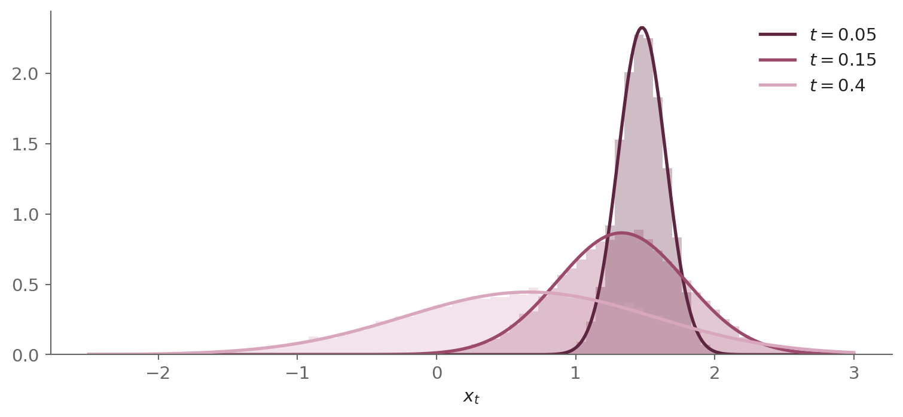
SDE-Based Generative Models: The Unification
The forward SDE that unifies DDPM and score matching, its VP, VE and sub-VP instances, its time reversal, and the probability-flow ODE.
stochastic calculus
diffusion models
generative AI
linear SDEs
Fokker-Planck equation
VP-SDE
VE-SDE
score matching
probability-flow ODE
Girsanov's theorem
risk-neutral pricing
The SDE framework of score-based generative modeling: the forward SDE as the continuum limit of a finite sequence of noise levels, the Variance-Preserving, Variance-Exploding and sub-VP processes as instances of one linear family, Anderson’s reverse-time SDE derived twice, the probability-flow ODE, denoising score matching for its one unknown, the score, and the reverse diffusion, ancestral and predictor-corrector samplers.
This series — Continuous-Time Generative Models
| Date | Title |
|---|---|
| Oct 16, 2026 | SDE-Based Generative Models: The Unification — you are here |
| Sep 10, 2026 | The Variational Bound (ELBO) and Score Matching: Two Routes to Denoising Diffusion |
| Aug 10, 2026 | Itô's Lemma: From Black-Scholes to Diffusion Models |
This is post #3 in the series Continuous-Time Generative Models. It builds directly on post #2, which developed the variational and score-based routes to generation separately.
DDPM and score matching with Langevin dynamics appear to be two different models, but they share one goal, which is to reverse a noising process. Each perturbs the data at a finite sequence of noise levels and learns to remove the noise one level at a time. They differ in how the noise grows from level to level, in what the network is trained to output and in how samples are generated. This post shows that all three differences are choices within one framework.
Post #2 developed the two routes to denoising diffusion. The variational route, built on an ELBO loss, led to a denoising network trained by a noise-prediction loss, and to ancestral sampling. The score-based route began with plain score matching and ended with denoising score matching over a finite sequence of noise levels, since no single level serves both fidelity and signal, and sampled with annealed Langevin dynamics.
Post #3 picks up from there. Song et al. [1] unified the two lineages by letting the noise level become a continuum indexed by time and the forward process a stochastic differential equation (SDE), and the two predecessors became two instances of one general form, the Variance-Preserving and Variance-Exploding SDEs.
In both, the drift is linear in the state and the diffusion coefficient depends on time alone, so Itô’s lemma derives one Gaussian perturbation kernel for the whole family, with a closed-form mean and variance. Song et al.’s sub-VP SDE is a third instance, whose variance never exceeds the Variance-Preserving one. Side by side, the three SDEs fall into two variance regimes, bounded and exploding.
The forward SDE turns data into noise. Generation needs the opposite direction, from noise back to an image, so the question is how to run the SDE backward. Anderson’s 1982 theorem [2] answers it. Under regularity conditions, the solution of the forward SDE, run backward in time, solves another SDE, the reverse-time SDE. Besides the forward coefficients, it needs one more quantity, the score \nabla_x \log p_t. The post derives the theorem twice, once through the equivalence between the marginals of an SDE’s solution and the Fokker-Planck equation, and once through Bayes’ rule, whose reweighting is the change of measure of Girsanov’s theorem [3], the one behind risk-neutral pricing.
The continuous view also yields an equation the discrete view could not express, the probability-flow ODE. Its solution is deterministic and has the same marginals as the solution of the reverse-time SDE, so generation becomes solving an ODE.
The score is learned by denoising score matching [4], a regression on the known score of the perturbation kernel, weighted over time. With DDPM’s weighting it reduces to DDPM’s noise-prediction loss [5], so the variational and score-based routes train with the same loss. The regression needs the kernel’s score in closed form, which the linear SDEs above provide. For an SDE with a nonlinear drift the kernel is in general unknown, and sliced score matching [6], which needs no target score, replaces denoising score matching.
Generation integrates the reverse-time SDE with the learned score. Reverse diffusion sampling is its Euler-Maruyama discretization, post #2’s ancestral sampler is a second discretization of the same equation, and the predictor-corrector sampler adds Langevin correction steps. Every sampler uses the model only through its score, so once the score is learned any sampler can be used, thus training and sampling are decoupled.
The post ends with why the unification matters. More than any single model, Song et al.’s main contribution is a common framework: the forward SDE, the score-based reverse-time SDE, and the deterministic probability-flow ODE. A generative model written in this framework inherits a century of mathematics on diffusion processes, from the Fokker-Planck equation to Itô calculus and Girsanov’s theorem.
The noise schedule becomes a design choice rather than the defining feature of a model, and the methods that followed, Karras et al.’s EDM [7], flow matching [8] and consistency models [9], are built on the same framework.
In short: post #1 built the forward process; post #2 reversed it by two methods; post #3 unifies the two methods as one forward SDE and its time reversal.
Thesis: The two lineages are two instances of the same unified framework and can be obtained as discretizations of two separate SDEs. This post builds this framework and the instances from first principles.
Roadmap
- Part 1: Replaces the finite sequence of noise levels with a continuum, which makes the forward process an SDE whose linear form and Gaussian perturbation kernel cover the Variance-Preserving, Variance-Exploding and sub-VP SDEs alike.
- Part 2: Runs that SDE backward with Anderson’s theorem, derived through the equivalence between the marginals of an SDE’s solution and the Fokker-Planck equation, and through Bayes’ rule, whose reweighting is Girsanov’s change of measure.
- Part 3: Derives the probability-flow ODE through the equivalence between the marginals of an ODE’s solution and the continuity equation. Its deterministic solution has the same marginals as the solutions of both SDEs and can be solved forward, from data to noise, or backward, from noise to data.
- Part 4: Estimates the reverse-time SDE’s one unknown term, the score, by denoising score matching, and shows that it and DDPM’s variational bound lead to the same noise-prediction loss.
- Part 5: Discretizes the reverse-time SDE using three samplers: reverse diffusion sampling, post #2’s ancestral sampler as a second discretization of the same equation, and the predictor-corrector sampler, which adds Langevin correction steps.
- Part 6: Asserts that the framework, more than any single model, is Song et al.’s main contribution and the foundation of the methods that followed, then shows why the choice of noise schedule matters in practice.
1 The forward SDE: modeling using infinitely many noise perturbations
Both lineages of post #2 perturb the data at a finite sequence of noise levels, and the model is defined only at those levels. Song et al. [1] replace the sequence with a continuum of levels indexed by a continuous time. The noise level then grows continuously rather than in discrete steps, and the perturbation becomes a continuous diffusion process, given by an SDE that gradually turns each data point into noise,
\boxed{dx_t = f(x_t, t)\, dt + g(t)\, dW_t} \tag{1}
where
- x_t \in \mathbb{R}^d: The state of the diffusion at continuous time t \in [0, T].
- f(\cdot, t): The drift coefficient, a map \mathbb{R}^d \to \mathbb{R}^d at each time t.
- g(t): The scalar diffusion coefficient, a function g: [0, T] \to \mathbb{R} of time alone.
- W_t: A standard d-dimensional Brownian motion (or Wiener process).
The drift sets the deterministic trend of the state, and the diffusion coefficient scales the noise added at each instant. All the SDEs of this post keep the diffusion scalar and state-independent. Song et al. state the framework for a d \times d diffusion matrix G(x, t) that may depend on the state, which Appendix A.4 develops.
Let p_t(x) denote the marginal distribution of x_t, a density p_t: \mathbb{R}^d \to [0, \infty) at each time t. At t = 0 the state follows the data distribution, x_0 \sim p_0, known to us only through a dataset of independent and identically distributed (i.i.d.) samples. At t = T it follows the terminal marginal, x_T \sim p_T. The forward process is designed so that p_T is close to a tractable prior independent of p_0, for example a Gaussian with fixed mean and covariance, from which sampling is straightforward. Generation uses that prior as its initial condition and runs the process backward, which is the subject of Part 2.
Two requirements narrow the choice of f and g. The SDE must have a unique strong solution, a process that satisfies the SDE with probability one and is adapted to the given Brownian motion W_t, which means that its value at each time t depends only on the initial condition x_0 and the Brownian path up to t. This holds when f and g are globally Lipschitz in x, uniformly in t, and grow at most linearly in x (Appendix A.1).
The perturbation kernel, the distribution of x_t given x_0, should also be Gaussian, as DDPM’s was in post #1. A Gaussian kernel lets training sample x_t at any t in one step, without simulating the SDE, and its score, the regression target of Part 4, has a closed form. Such a kernel requires the drift f to be affine in x, which Appendix A.2 proves in one dimension and for a drift that acts on each coordinate separately, and thus all the forward processes of this series have this linear form,
dx_t = \underbrace{\boxed{f_{\mathrm{lin}}(t)\, x_t}}_{\text{linear drift}}\, dt + g(t)\, dW_t \tag{2}
where the generic drift f(x_t, t) of Equation 1 is replaced with a drift linear in x_t, f_{\mathrm{lin}}(t)\, x_t, with a scalar, state-independent coefficient f_{\mathrm{lin}}: [0, T] \to \mathbb{R}.
1.1 The linear SDE
For the forward SDE Equation 1, the perturbation kernel p_{0t}(x_t \mid x_0) is the distribution of the state x_t at time t given a fixed initial condition x_0, a density p_{0t}(\cdot \mid x_0): \mathbb{R}^d \to [0, \infty) for each x_0 \in \mathbb{R}^d and t \in (0, T].
Linearity is what makes the perturbation kernel p_{0t}(x_t \mid x_0) Gaussian, with a closed-form mean and variance. This section derives the kernel of Equation 2 once, for arbitrary f_{\mathrm{lin}} and g, so the two canonical SDEs of Song et al. [1] are distinguished entirely by their choice of f_{\mathrm{lin}} and g.
1.1.1 The perturbation kernel
For each f_{\mathrm{lin}} and g, the perturbation kernel of Equation 2 is
\boxed{p_{0t}(x_t \mid x_0) = \mathcal{N}\big(x_t;\; m(t)\, x_0,\; \Sigma(t)\, I\big)} \tag{3}
with the mean coefficient m: [0, T] \to (0, \infty)
\boxed{m(t) = \exp\!\Big(\int_0^t f_{\mathrm{lin}}(s)\, ds\Big)} \tag{4}
and the per-component variance \Sigma: [0, T] \to [0, \infty)
\boxed{\Sigma(t) = m(t)^2 \int_0^t \frac{g(s)^2}{m(s)^2}\, ds} \tag{5}
1.1.2 Deriving the perturbation kernel using Itô’s lemma
The kernel follows from solving Equation 2 explicitly, with the stochastic counterpart of the integrating factor that solves a linear ordinary differential equation (ODE). Itô’s lemma of post #1, applied to a transformed state, removes the drift. The driftless SDE then integrates directly to an Itô integral, whose distribution gives the kernel of the transformed state, and the reverse transform returns the kernel of x_t.
The state is a d-vector, but the SDE acts on each coordinate separately. Write x^k_t and W^k_t for the k-th components of x_t and W_t, k = 1, \ldots, d. A symbol with the superscript k is a scalar, and the same symbol without it is the d-vector.
1.1.2.1 Removing the drift with Itô’s lemma
The SDE:
The state x_t follows Equation 2,
dx_t = f_{\mathrm{lin}}(t)\, x_t\, dt + g(t)\, dW_t
Because f_{\mathrm{lin}} and g are scalars, the SDE decouples into d scalar SDEs, one per component, each driven by its own component of W_t. Taking the k-th component,
dx^k_t = f_{\mathrm{lin}}(t)\, x^k_t\, dt + g(t)\, dW^k_t
where W^k_t is a standard one-dimensional Brownian motion. Until the components are stacked again, every quantity below is a scalar.
Itô’s lemma:
Let h: \mathbb{R} \times [0, T] \to \mathbb{R} be twice continuously differentiable in x and once in t. For the transform h(x^k_t, t) of a scalar process dx^k_t = f\, dt + g\, dW^k_t, with drift coefficient f and diffusion coefficient g,
dh = \left(\frac{\partial h}{\partial t} + f\, \frac{\partial h}{\partial x} + \tfrac{1}{2}\, g^2\, \frac{\partial^2 h}{\partial x^2}\right) dt + g\, \frac{\partial h}{\partial x}\, dW^k_t \tag{6}
where the partial derivatives of h(x, t) are taken in its scalar argument x and evaluated at x = x^k_t.
Integrating factor:
A linear ODE is solved by multiplying it by an integrating factor, a function that turns it into a total derivative. Its analogue for a linear SDE applies Itô’s lemma to the transform y^k_t = h(x^k_t, t), with
h(x, t) = e^{-F(t)}\, x, \qquad F(t) = \int_0^t f_{\mathrm{lin}}(s)\, ds \tag{7}
so that F: [0, T] \to \mathbb{R} has \frac{dF}{dt} = f_{\mathrm{lin}}(t) and F(0) = 0. The factor e^{-F(t)} is the same for each component.
Coefficients (from Equation 2):
The drift of the k-th component is f = f_{\mathrm{lin}}(t)\, x^k_t and its diffusion coefficient is g(t).
Partials (from the transform Equation 7):
With \frac{dF}{dt} = f_{\mathrm{lin}}(t), by the chain rule,
\frac{\partial h}{\partial t} = -f_{\mathrm{lin}}(t)\, e^{-F(t)}\, x, \qquad \frac{\partial h}{\partial x} = e^{-F(t)}, \qquad \frac{\partial^2 h}{\partial x^2} = 0
Substituting f = f_{\mathrm{lin}}(t)\, x^k_t and the three partials, evaluated at x = x^k_t, into Itô’s lemma Equation 6,
dy^k_t = \Big(-f_{\mathrm{lin}}(t)\, e^{-F(t)}\, x^k_t + f_{\mathrm{lin}}(t)\, x^k_t\, e^{-F(t)} + \tfrac{1}{2}\, g(t)^2 \cdot 0\Big)\, dt + g(t)\, e^{-F(t)}\, dW^k_t
Cancelling the explicit-time term against the drift term,
dy^k_t = g(t)\, e^{-F(t)}\, dW^k_t
Stacking the d components, the vector y_t = e^{-F(t)}\, x_t satisfies
dy_t = g(t)\, e^{-F(t)}\, dW_t
so y_t is driftless.
1.1.2.2 Integrating the driftless SDE
The right side of the driftless SDE involves only time and the Brownian motion, so it integrates directly. Integrating both sides from 0 to t,
\int_0^t dy_s = \int_0^t g(s)\, e^{-F(s)}\, dW_s
Evaluating the left side by the fundamental theorem of calculus,
y_t - y_0 = \int_0^t g(s)\, e^{-F(s)}\, dW_s
Substituting y_0 = e^{-F(0)}\, x_0 = x_0, since F(0) = 0,
y_t - x_0 = \int_0^t g(s)\, e^{-F(s)}\, dW_s
Moving x_0 across,
y_t = x_0 + \int_0^t g(s)\, e^{-F(s)}\, dW_s
1.1.2.3 Properties of the solution distribution
The Itô integral has a deterministic integrand g(s)\, e^{-F(s)}, and a deterministic integrand makes the integral Gaussian. For a deterministic \varphi and a one-dimensional Brownian motion, Eq. (7) of post #1 gives the distribution of such an integral,
\int_0^t \varphi(s)\, dW^k_s \sim \mathcal{N}\Big(0,\; \int_0^t \varphi(s)^2\, ds\Big)
With \varphi = g\, e^{-F}, the k-th component of the integral is Gaussian, with mean 0 and variance \int_0^t g(s)^2\, e^{-2F(s)}\, ds. The d components are driven by independent components of W_t, so they are independent, and the integral is a Gaussian vector with covariance \big(\int_0^t g(s)^2\, e^{-2F(s)}\, ds\big) I.
Conditioning on x_0, which is independent of the Brownian motion and hence of the integral, the offset x_0 is a deterministic constant. Adding it to the Gaussian integral is an affine transformation, and an affine function of a Gaussian is Gaussian, hence
y_t \mid x_0 \sim \mathcal{N}\Big(x_0,\; \Big(\int_0^t g(s)^2\, e^{-2F(s)}\, ds\Big) I\Big)
Applying the reverse transform of Equation 7, x_t = e^{F(t)}\, y_t, which multiplies the mean by e^{F(t)} and the covariance by e^{2F(t)},
p_{0t}(x_t \mid x_0) = \mathcal{N}\Big(x_t;\; e^{F(t)}\, x_0,\; e^{2F(t)} \Big(\int_0^t g(s)^2\, e^{-2F(s)}\, ds\Big) I\Big) \tag{8}
Now we compute the two moments of this kernel without F.
The mean:
The mean of the kernel Equation 8 is the initial state multiplied by the deterministic factor e^{F(t)},
\mathbb{E}[x_t \mid x_0] = e^{F(t)}\, x_0
Substituting back F(t) = \int_0^t f_{\mathrm{lin}}(s)\, ds from Equation 7,
\mathbb{E}[x_t \mid x_0] = \exp\!\Big(\int_0^t f_{\mathrm{lin}}(s)\, ds\Big)\, x_0
Naming the exponential factor m(t),
\mathbb{E}[x_t \mid x_0] = m(t)\, x_0
where
\boxed{m(t) = \exp\!\Big(\int_0^t f_{\mathrm{lin}}(s)\, ds\Big)}
which is Equation 4.
The variance:
The per-component variance of the kernel Equation 8 is
\Sigma(t) = e^{2F(t)} \int_0^t g(s)^2\, e^{-2F(s)}\, ds
Substituting e^{F} = m,
\boxed{\Sigma(t) = m(t)^2 \int_0^t \frac{g(s)^2}{m(s)^2}\, ds}
which is Equation 5.
The kernel:
Substituting m(t) and \Sigma(t) into the perturbation kernel,
\boxed{p_{0t}(x_t \mid x_0) = \mathcal{N}\big(x_t;\; m(t)\, x_0,\; \Sigma(t)\, I\big)}
which is Equation 3. \square
Every linear SDE therefore has a Gaussian perturbation kernel, centered at m(t)\, x_0 and with the same variance \Sigma(t) in every coordinate. Both moments are integrals of f_{\mathrm{lin}} and g alone, so the two coefficients fix the kernel completely. The next three sections make three choices of them, and each kernel follows by evaluating the two integrals.
1.2 VP-SDE: DDPM forward process
The forward process of Denoising Diffusion Probabilistic Models (DDPM) of Ho et al. [5] was built in post #1, and its continuum limit is the Variance-Preserving (VP) SDE of Song et al. [1]. The first choice recovers it.
With a noise schedule \beta: [0, T] \to (0, \infty), which sets the rate at which noise is injected, the VP-SDE is
\boxed{dx_t = -\tfrac{1}{2}\beta(t)\, x_t\, dt + \sqrt{\beta(t)}\; dW_t} \tag{9}
1.2.1 Deriving the VP-SDE
The VP-SDE is the continuum limit of DDPM’s noising chain, which Section 4.8 of post #1 derives step by step. Partition [0, T] into the N steps of even width \Delta t = T/N, with t_i = i\,\Delta t. Each step of the chain shrinks the state and adds independent Gaussian noise,
x_i = \sqrt{1 - \beta_i}\; x_{i-1} + \sqrt{\beta_i}\; \epsilon_i
where \epsilon_i \sim \mathcal{N}(0, I) is the independent noise injected at step i and \beta_i = \beta(t_i)\, \Delta t is the discrete noise schedule. Taylor-expanding the square root for small \Delta t, writing \sqrt{\Delta t}\, \epsilon_i as the Brownian increment \Delta W_i and letting \Delta t \to 0 turns the chain into Equation 9.
1.2.2 Solving the VP-SDE
Comparing Equation 9 with Equation 2 identifies the coefficients,
f_{\mathrm{lin}}(t) = -\tfrac12\beta(t), \qquad g(t) = \sqrt{\beta(t)}
Both moments are simplest in terms of the cumulative product \bar\alpha: [0, T] \to (0, 1] of post #1,
\bar\alpha(t) = \exp\!\Big(-\int_0^t \beta(s)\, ds\Big) \tag{10}
The mean:
Substituting f_{\mathrm{lin}} = -\tfrac12\beta into Equation 4,
m(t) = \exp\!\Big(-\tfrac12 \int_0^t \beta(s)\, ds\Big)
Rewriting by the definition of \bar\alpha, Equation 10,
m(t) = \sqrt{\bar\alpha(t)}
The variance:
Substituting m^2 = \bar\alpha and g^2 = \beta into Equation 5,
\Sigma(t) = \bar\alpha(t) \int_0^t \frac{\beta(s)}{\bar\alpha(s)}\, ds
Differentiating \bar\alpha, Equation 10, by the chain rule gives \bar\alpha'(s) = -\beta(s)\, \bar\alpha(s). Substituting \beta(s) = -\bar\alpha'(s)/\bar\alpha(s),
\Sigma(t) = \bar\alpha(t) \int_0^t \frac{-\bar\alpha'(s)}{\bar\alpha(s)^2}\, ds
Recognizing the integrand as \frac{d}{ds}\Big[\frac{1}{\bar\alpha(s)}\Big],
\Sigma(t) = \bar\alpha(t) \int_0^t \frac{d}{ds}\Big[\frac{1}{\bar\alpha(s)}\Big]\, ds
Applying the fundamental theorem of calculus,
\Sigma(t) = \bar\alpha(t) \Big(\frac{1}{\bar\alpha(t)} - \frac{1}{\bar\alpha(0)}\Big)
Evaluating, with \bar\alpha(0) = 1,
\Sigma(t) = \bar\alpha(t) \Big(\frac{1}{\bar\alpha(t)} - 1\Big)
Multiplying out,
\Sigma(t) = 1 - \bar\alpha(t)
The kernel:
Collecting the two moments,
\boxed{m(t) = \sqrt{\bar\alpha(t)}, \qquad \Sigma(t) = 1 - \bar\alpha(t)} \tag{11}
Substituting these into Equation 3, the perturbation kernel is
\boxed{p_{0t}(x_t \mid x_0) = \mathcal{N}\!\big(x_t;\; \sqrt{\bar\alpha(t)}\, x_0,\; (1 - \bar\alpha(t))\, I\big)} \tag{12}
which is the kernel derived for DDPM with the same integrating factor in Section 4.9 of post #1. \square
The name of the SDE captures how the two coefficients interact. The drift contracts the data while the diffusion adds noise. For standardized data, with identity covariance, the two effects cancel, and the marginal variance stays I for each t (Section 4.10.1.1 of post #1). As the accumulated noise grows, \bar\alpha(t) \to 0, and every initial condition is carried to the standard normal prior \mathcal{N}(0, I) (Section 4.9.3.4 of post #1).
Comparing the perturbation kernel with an SDE simulation:
Here we check the closed-form VP perturbation kernel, Equation 12, against a direct simulation of the VP-SDE, Equation 9. The simulation discretizes it with the Euler-Maruyama scheme [10] and a small step \Delta t,
x_{t+\Delta t} = x_t - \tfrac12 \beta(t)\, x_t\, \Delta t + \sqrt{\beta(t)\, \Delta t}\; z, \qquad z \sim \mathcal{N}(0, I)
All paths have the same initial condition x_0, and their histograms at three times are compared with the kernel at those times in Figure 1 below.
At each time the histograms match the kernel. As t grows, \bar\alpha(t) falls and the peak moves toward zero and widens. The simulation needs 50, 150 and 400 Euler-Maruyama steps to reach these times, while the kernel gives the distribution directly.
Simulating the VP forward process:
Here we follow a two-mode data distribution through the VP-SDE into the standard normal prior, as Figure 2 shows below.
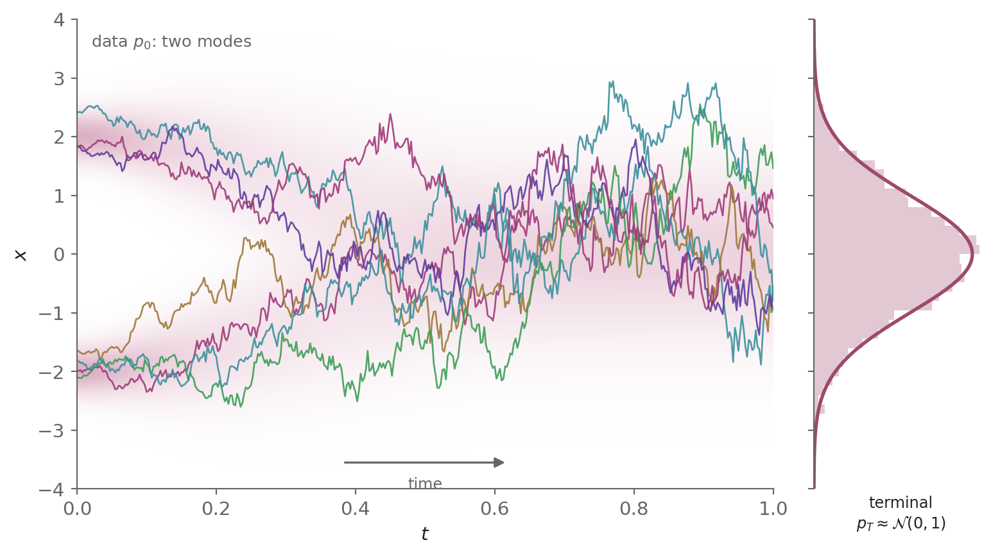
The drift shifts both modes toward zero while the noise widens them. The two ridges stay apart early, merge into one band once the modes overlap, and by t = T the histogram of x_T matches \mathcal{N}(0, 1). These data are not standardized, so their variance is not preserved; it falls toward 1, the variance of the prior.
1.3 VE-SDE: SMLD noise perturbation
The noise perturbation of score matching with Langevin dynamics (SMLD), the method of Song and Ermon [11] that trains a noise-conditional score network (NCSN), was built in post #2. Its continuum limit is the Variance-Exploding (VE) SDE, which has no drift and a growing noise level. The second choice recovers it.
With an increasing noise function \sigma: [0, T] \to (0, \infty), the VE-SDE is
\boxed{dx_t = \sqrt{\frac{d\,[\sigma^2(t)]}{dt}}\; dW_t} \tag{13}
1.3.1 Deriving the VE-SDE
SMLD’s noise levels:
SMLD perturbs the data at L noise levels \sigma_1 > \sigma_2 > \cdots > \sigma_L, a geometric sequence in which each level is a fixed multiple of the next (Part 4 of post #2). At level k the perturbed sample is x_0 + \sigma_k\, \epsilon with \epsilon \sim \mathcal{N}(0, I), so each level has its own perturbation kernel \mathcal{N}(x_0, \sigma_k^2 I). The index follows annealed Langevin dynamics, which starts at the largest level \sigma_1 and descends to \sigma_L.
From the geometric sequence to the schedule:
The forward process traverses the levels in increasing order of noise, from \sigma_L = \sigma_{\min} to \sigma_1 = \sigma_{\max}. Take the partition of [0, T] from Section 1.2, with N = L - 1 steps of even width \Delta t = T/N,
0 = t_0 < t_1 < \cdots < t_N = T, \qquad t_i = i\, \Delta t
and assign the levels to its N + 1 = L grid points in that order, \sigma(t_i) = \sigma_{L-i}. The sequence is geometric, so each step up multiplies the level by a fixed ratio r. After i steps up from \sigma_{\min},
\sigma(t_i) = \sigma_{\min}\, r^i
The N steps reach \sigma_{\max} = \sigma_{\min}\, r^N, so r = (\sigma_{\max}/\sigma_{\min})^{1/N}. Substituting it,
\sigma(t_i) = \sigma_{\min} \Big(\frac{\sigma_{\max}}{\sigma_{\min}}\Big)^{i/N}
Substituting i/N = t_i/T, from t_i = i\, \Delta t and \Delta t = T/N,
\sigma(t_i) = \sigma_{\min} \Big(\frac{\sigma_{\max}}{\sigma_{\min}}\Big)^{t_i/T}
The right side depends on the partition only through the grid point t_i. Taking the continuum limit N \to \infty with t = t_i fixed, so that the step size \Delta t = T/N \to 0, gives the continuous geometric schedule of Song et al. [1],
\sigma(t) = \sigma_{\min} \Big(\frac{\sigma_{\max}}{\sigma_{\min}}\Big)^{t/T}
The L levels are this schedule at the L grid points.
From the noising chain to the SDE:
SMLD applies the noise of each level to the data sample in one step, x_0 + \sigma(t_i)\, \epsilon. An SDE instead requires the noise to accumulate over many small steps, as in DDPM’s forward process. Each step of the partition therefore adds an independent Gaussian increment of variance v_i. Since the variances of independent Gaussians add, raising the noise level from \sigma(t_{i-1}) to \sigma(t_i) at step i requires
\sigma^2(t_i) = \sigma^2(t_{i-1}) + v_i
Solving for the step variance,
v_i = \sigma^2(t_i) - \sigma^2(t_{i-1})
which is positive because \sigma increases.
Applying this at each step of the partition gives SMLD’s noising chain, a sequence of small Gaussian noise additions, one per step [1],
x_i = x_{i-1} + \sqrt{\sigma^2(t_i) - \sigma^2(t_{i-1})}\; \epsilon_i
where \epsilon_i \sim \mathcal{N}(0, I) is the independent noise injected at step i. Started from the data x_0 at the grid point t_0, the chain gives x_i the variance \sigma^2(t_i) - \sigma^2(t_0) about x_0, which is SMLD’s variance \sigma^2(t_i) less the offset \sigma^2(t_0) = \sigma_{\min}^2.
For small \Delta t, Taylor-expanding the variance increment gives \sigma^2(t_i) - \sigma^2(t_{i-1}) \approx \frac{d[\sigma^2(t)]}{dt}\, \Delta t, with the continuous time t in place of the grid point t_i. Substituting the expansion into the previous line,
x_i \approx x_{i-1} + \sqrt{\frac{d[\sigma^2(t)]}{dt}\, \Delta t}\; \epsilon_i
Subtracting x_{i-1},
x_i - x_{i-1} \approx \sqrt{\frac{d[\sigma^2(t)]}{dt}\, \Delta t}\; \epsilon_i
Factoring the noise term as \sqrt{d[\sigma^2(t)]/dt}\,\big(\sqrt{\Delta t}\, \epsilon_i\big),
x_i - x_{i-1} \approx \sqrt{\frac{d[\sigma^2(t)]}{dt}}\; \big(\sqrt{\Delta t}\, \epsilon_i\big)
The factor \sqrt{\Delta t}\, \epsilon_i, with \epsilon_i \sim \mathcal{N}(0, I), is a Brownian increment \Delta W_i \sim \mathcal{N}(0, \Delta t\, I) over [t_{i-1}, t_i],
x_i - x_{i-1} \approx \sqrt{\frac{d[\sigma^2(t)]}{dt}}\; \Delta W_i
This difference equation is the Euler-Maruyama scheme of the SDE below, and such schemes converge to the SDE’s solution as \Delta t \to 0 under the Lipschitz and linear-growth conditions of Appendix A.1, with coefficients continuous in t as the geometric schedule’s are [10]. Taking that limit gives the VE-SDE,
\boxed{dx_t = \sqrt{\frac{d\,[\sigma^2(t)]}{dt}}\; dW_t}
which is Equation 13. \square
1.3.2 Solving the VE-SDE
Comparing Equation 13 with Equation 2 identifies the coefficients,
f_{\mathrm{lin}}(t) = 0, \qquad g(t)^2 = \tfrac{d}{dt}\sigma^2(t)
The mean:
Substituting f_{\mathrm{lin}} = 0 into Equation 4,
m(t) = 1
The variance:
Substituting m = 1 and g^2 = \tfrac{d}{ds}\sigma^2 into Equation 5,
\Sigma(t) = \int_0^t \frac{d}{ds}\big[\sigma^2(s)\big]\, ds
Applying the fundamental theorem of calculus,
\Sigma(t) = \sigma^2(t) - \sigma^2(0)
The kernel:
Substituting m(t) = 1 and \Sigma(t) into Equation 3, the perturbation kernel is
\boxed{p_{0t}(x_t \mid x_0) = \mathcal{N}\big(x_t;\; x_0,\; [\sigma^2(t) - \sigma^2(0)]\, I\big)} \tag{14}
This is the VE perturbation kernel. At the grid times it matches SMLD’s noising chain, whose independent increments have variances that add and telescope to \sigma^2(t_i) - \sigma^2(t_0). \square
With m(t) = 1 the data is never contracted, so the kernel stays centered at x_0 while its variance grows with the noise level. Unlike the VP kernel, it approaches no fixed distribution, so the noise level itself must outgrow the data scale, as the endpoints below make precise.
The two endpoints:
Each endpoint has one consequence. Since \sigma_{\min} \ll 1, \sigma(0) is negligible against the working noise levels, and the kernel is approximated by \mathcal{N}(x_t;\, x_0,\, \sigma^2(t)\, I), an idealization used from here on. Since \sigma_{\max} \gg 1, the variance explodes, which is what the name captures. Setting t = T,
x_T \mid x_0 \sim \mathcal{N}(x_0, \sigma_{\max}^2 I)
Averaging over x_0 leaves p_T \approx \mathcal{N}(0, \sigma_{\max}^2 I) because \sigma_{\max} swamps the data scale. This is the x_0-free prior that serves as the sampler’s initial condition.
Simulating the VE forward process:
Here we follow the same two-mode data through the VE-SDE, as Figure 3 shows below.
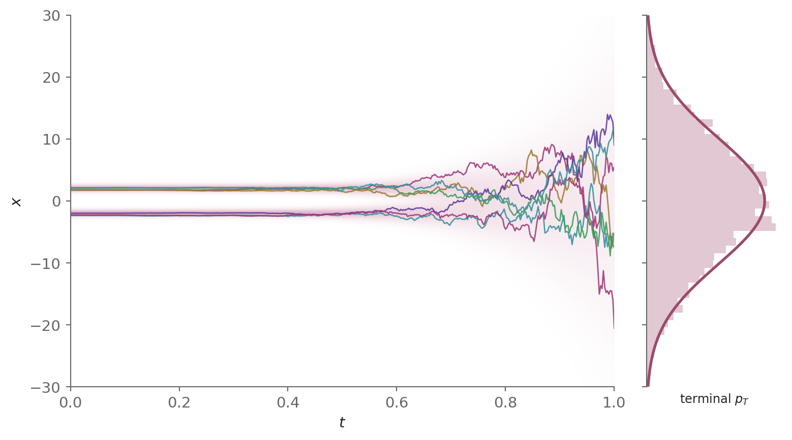
With no drift, each mode stays centered where it started while the noise widens it. The geometric schedule keeps the noise small for most of the interval, so the paths barely spread at first and then spread rapidly near the end, where the two ridges merge. The variance grows to about \sigma_{\max}^2, while the VP variance of Figure 2 fell to 1.
1.4 The sub-VP SDE
The third choice has no discrete predecessor. It is Song et al.’s own construction, the sub-VP SDE [1], whose variance stays below the VP variance.
It keeps the VP drift and scales the VP g(t)^2 = \beta(t) by the factor 1 - \bar\alpha(t)^2. The factor is 0 at t = 0 and approaches 1 as \bar\alpha(t) \to 0. With \bar\alpha the cumulative product Equation 10 of the VP-SDE,
\boxed{dx_t = -\tfrac12 \beta(t)\, x_t\, dt + \sqrt{\beta(t)\big(1 - \bar\alpha(t)^2\big)}\; dW_t} \tag{15}
Song et al. write the factor as 1 - e^{-2\int_0^t \beta(s)\, ds}, which is 1 - \bar\alpha(t)^2.
1.4.1 Solving the sub-VP SDE
Comparing Equation 15 with Equation 2 identifies the coefficients,
f_{\mathrm{lin}}(t) = -\tfrac12 \beta(t), \qquad g(t)^2 = \beta(t)\big(1 - \bar\alpha(t)^2\big)
The mean:
The drift is identical to VP, so the mean is the VP mean, m(t) = \sqrt{\bar\alpha(t)}.
The variance:
Substituting m^2 = \bar\alpha and g^2 = \beta(1-\bar\alpha^2) into Equation 5,
\Sigma(t) = \bar\alpha(t) \int_0^t \frac{\beta(s)\big(1 - \bar\alpha(s)^2\big)}{\bar\alpha(s)}\, ds
Splitting the fraction,
\Sigma(t) = \bar\alpha(t) \int_0^t \Big(\frac{\beta(s)}{\bar\alpha(s)} - \beta(s)\, \bar\alpha(s)\Big)\, ds
Substituting \beta(s) = -\bar\alpha'(s)/\bar\alpha(s), as in the VP variance,
\Sigma(t) = \bar\alpha(t) \int_0^t \Big(-\frac{\bar\alpha'(s)}{\bar\alpha(s)^2} + \bar\alpha'(s)\Big)\, ds
Recognizing the integrand as \frac{d}{ds}\Big[\frac{1}{\bar\alpha(s)} + \bar\alpha(s)\Big],
\Sigma(t) = \bar\alpha(t) \int_0^t \frac{d}{ds}\Big[\frac{1}{\bar\alpha(s)} + \bar\alpha(s)\Big]\, ds
Applying the fundamental theorem of calculus,
\Sigma(t) = \bar\alpha(t) \Big(\frac{1}{\bar\alpha(t)} + \bar\alpha(t) - \frac{1}{\bar\alpha(0)} - \bar\alpha(0)\Big)
Evaluating, with \bar\alpha(0) = 1,
\Sigma(t) = \bar\alpha(t) \Big(\frac{1}{\bar\alpha(t)} + \bar\alpha(t) - 2\Big)
Multiplying out,
\Sigma(t) = 1 + \bar\alpha(t)^2 - 2\, \bar\alpha(t)
Factoring,
\Sigma(t) = \big(1 - \bar\alpha(t)\big)^2
The kernel:
Substituting m(t) = \sqrt{\bar\alpha(t)} and \Sigma(t) into Equation 3, the perturbation kernel is
\boxed{p_{0t}(x_t \mid x_0) = \mathcal{N}\!\big(x_t;\; \sqrt{\bar\alpha(t)}\, x_0,\; (1 - \bar\alpha(t))^2\, I\big)} \tag{16}
This is the sub-VP perturbation kernel. \square
Sub-VP shares the VP mean, and its variance is the VP variance squared. For \bar\alpha(t) \in (0, 1), (1 - \bar\alpha)^2 < 1 - \bar\alpha, so the sub-VP variance lies strictly below the VP variance at each intermediate time. The two meet at both ends: at 0 when t = 0, and at 1 as \bar\alpha \to 0. Sub-VP therefore has the same initial condition, the data, and reaches the same prior \mathcal{N}(0, I) with less noise in between.
This is the bound the name captures. In Song et al.’s experiments on CIFAR-10, a dataset of 32 \times 32 colour images, it gives higher likelihoods than VP for each model compared [1]. The likelihood here is the density the trained model assigns to held-out test images, computed by the exact method of post #4.
1.5 Side by side: three SDEs, two variance regimes
Table 1 sets the three forward SDEs side by side, each column obtained from Equation 4 and Equation 5 by substitution. They fall into two variance regimes, which give the SDEs their names. VP and sub-VP keep the kernel variance bounded, and it reaches 1. VE lets it grow without an intrinsic bound, to \sigma_{\max}^2 at t = T. The drift is what produces the regime. Differentiating Equation 5 by the product rule,
\Sigma'(t) = 2\, m(t)\, m'(t) \int_0^t \frac{g(s)^2}{m(s)^2}\, ds + g(t)^2
Substituting m' = f_{\mathrm{lin}}\, m from Equation 4, the first term becomes 2 f_{\mathrm{lin}}\, \Sigma,
\Sigma'(t) = 2 f_{\mathrm{lin}}(t)\, \Sigma(t) + g(t)^2
The diffusion adds variance at rate g^2, and a negative drift removes it at a rate proportional to \Sigma itself. For VP, f_{\mathrm{lin}} = -\tfrac12\beta and g^2 = \beta, so \Sigma' = \beta(t)\,(1 - \Sigma), and the variance relaxes to 1 whatever the schedule. VP’s drift is the one that makes the removal balance the injection at \Sigma = 1. VE has no drift, so \Sigma' = g^2 \ge 0 and nothing offsets the added noise. The mean row follows from the drift alone, and the variance and prior rows from the drift and diffusion together.
| VP-SDE (DDPM) | VE-SDE (SMLD) | sub-VP SDE | |
|---|---|---|---|
| Drift f_{\mathrm{lin}}(t)\,x | -\tfrac12\beta(t)\,x (toward 0) | 0 (none) | -\tfrac12\beta(t)\,x, as VP |
| Diffusion g(t)^2 | \beta(t) | \tfrac{d}{dt}\sigma^2(t) | \beta(t)\big(1 - \bar\alpha(t)^2\big) |
| Mean m(t) | \sqrt{\bar\alpha(t)} \to 0 | 1 (data preserved) | \sqrt{\bar\alpha(t)} \to 0 |
| Variance \Sigma(t) | 1 - \bar\alpha(t) \to 1 | \sigma^2(t) - \sigma^2(0) \approx \sigma_{\max}^2 at t = T | \big(1 - \bar\alpha(t)\big)^2 \to 1, below VP |
| Variance regime | bounded | exploding | bounded |
| Terminal marginal p_T | \approx \mathcal{N}(0, I) | \approx \mathcal{N}(0, \sigma_{\max}^2 I) | \approx \mathcal{N}(0, I) |
Comparing the three perturbation kernels:
Here we plot the mean coefficient and the variance of the perturbation kernel over time for the VP, sub-VP and VE SDEs, as Figure 4 shows below.
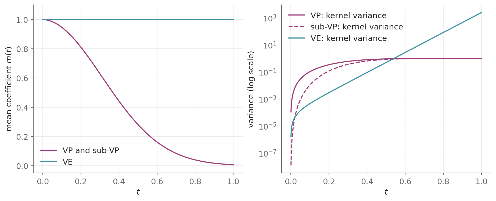
VP and sub-VP shrink the mean coefficient to 0, while VE keeps it at 1. The VP variance saturates at 1. The sub-VP variance starts orders of magnitude below it and joins it at the end. The VE variance grows by several orders of magnitude, to \sigma_{\max}^2.
2 The reverse-time SDE
Part 1 built a forward SDE whose solution starts at the data distribution p_0 and ends at the terminal marginal p_T, which is close to a simple prior. Generation needs the opposite direction. Post #2 reversed the noising in discrete steps, one noise level at a time, in both lineages. In continuous time the question is whether the time reversal of a diffusion is again a diffusion, and with which coefficients.
Anderson’s theorem [2] answers both. Under regularity conditions on f, g and the marginals p_t, made precise by Haussmann and Pardoux [12], the solution of the forward SDE Equation 1, run backward in time, is a diffusion with the drift f - g^2\, \nabla_x \log p_t and the same diffusion coefficient g,
\boxed{d\bar x_t = \Big[\, f(\bar x_t, t) - g(t)^2\, \nabla_x \log p_t(\bar x_t) \,\Big] dt + g(t)\, d\bar W_t} \tag{17}
Here time flows backward from T to 0, dt is a negative time increment, and \bar W_t is a standard Brownian motion in that reversed time. The solution \bar x_t, the reverse-time process, carries the same bar, which marks a time-reversed object. Compared with the forward SDE, the drift gains a single term, -g(t)^2\, \nabla_x \log p_t. It moves samples toward regions where p_t is high, and so toward the data as t \to 0. The forward coefficients f and g are known in closed form, so the score of the forward marginal is the only unknown, and generating samples reduces to learning it.
NoteConditions and caveats: when the reverse-time SDE holds
Two conditions suffice for the use this post makes of the theorem, a reverse-time SDE with a unique strong solution from \bar x_T \sim p_T. Haussmann and Pardoux’s theorem itself asks less of the score: it needs Lipschitz, linear-growth coefficients f and g and an integrability condition on p_t and its gradient [12].
- The forward marginals p_t are smooth and strictly positive, so the score \nabla_x \log p_t exists.
- The drift f, the diffusion g and the score satisfy the Lipschitz and linear-growth conditions of Appendix A.1, so Equation 17 has a unique strong solution.
For the noising processes of this post, the first condition holds for each t > 0. Each p_t is the distribution of a scaled data sample plus independent Gaussian noise, a Gaussian convolution of p_0, so it is smooth and strictly positive. The second condition places one requirement on the data. If p_0 is supported in a bounded set, as pixel data is, each derivative of \log p_t of order two or more is bounded for each t > 0, uniformly away from t = 0, as Equation 21 in Step 2 of Section 2.2 states. The score is then Lipschitz there.
The one genuine caveat is the limit t \to 0. If the data concentrates on a low-dimensional manifold (the manifold hypothesis), \nabla_x \log p_t diverges as t \to 0 [11]. The extreme case is a single data point, p_0 = \delta_{x_0}. Then p_t is the perturbation kernel itself, and for the VP-SDE its score -(x_t - \sqrt{\bar\alpha(t)}\,x_0)\,/\,(1 - \bar\alpha(t)) grows without bound as 1 - \bar\alpha(t) \to 0, for each x_t \neq x_0. The drift of the reverse-time SDE then has no Lipschitz bound at t = 0, so the condition of Appendix A.1 fails there.
Samplers therefore stop at a small time t_{\min} > 0 instead of integrating to t = 0. The score is Lipschitz for each t > 0, and for small t_{\min} the noise left in the sample, of variance \Sigma(t_{\min}), is small next to the scale of the data. Training stops at the same small time, because in this example the kernel’s score, the regression target of Part 4, grows without bound as well. The rest of the post states its results for t > 0 and leaves this cutoff implicit.
Solved backward from the initial condition \bar x_T \sim p_T, the reverse-time SDE has a solution \bar x_t with the forward marginal p_t for each t, so \bar x_0 follows the data distribution p_0.
Simulating the reverse-time SDE:
Here we solve the reverse-time SDE backward for the two-mode example of Figure 2, driven by the exact score, as Figure 5 shows below.
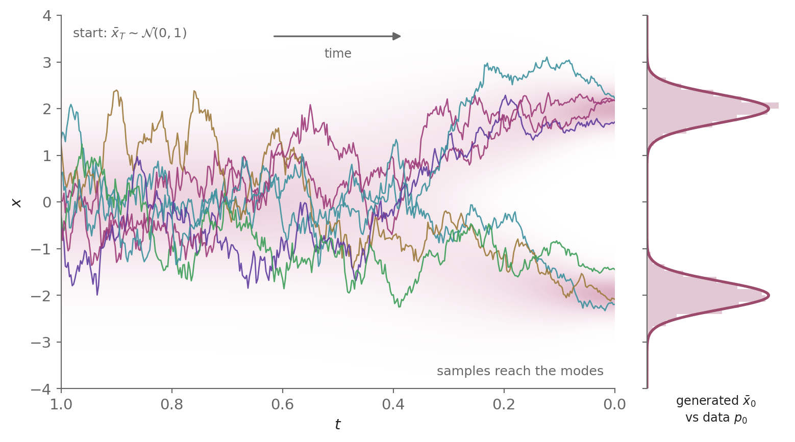
Each path starts from the prior at t = T, and the score term in the drift drives it into one of the two data modes as t decreases. The histogram of the generated \bar x_0 matches the data distribution p_0, as the equality of the marginals predicts.
Section 2.1 states the equivalence between the marginals of an SDE’s solution and the Fokker-Planck equation. Section 2.2 and Section 2.3 then derive Equation 17 by two routes: matching marginals through that equivalence, and Bayes’ rule over one short time step.
2.1 Marginal path ⟺ Fokker-Planck equation
This section states the equivalence between the marginals of an SDE’s solution and the Fokker-Planck equation. Appendix A.4 derives the Fokker-Planck equation for a general SDE, whose diffusion is a d \times d matrix G(x, t) that may depend on the state.
Definitions:
- A probability path is a family of probability densities \rho_t: \mathbb{R}^d \to [0, \infty), one for each time t \in (0, T], with \rho_t(x) continuously differentiable in t and twice continuously differentiable in x, together with an initial distribution \rho_0, which need not have a density, such that \int \psi\, \rho_t\, dx \to \mathbb{E}_{\rho_0}[\psi] as t \to 0 for each bounded continuous \psi.
- The marginal path of a process is the probability path formed by its marginal densities for t > 0, with its distribution at t = 0 as the initial distribution.
- A test function is a function \varphi: \mathbb{R}^d \to \mathbb{R} that is infinitely differentiable and zero outside a bounded set.
- A function of x decays at infinity when it and its first two derivatives tend to zero as \lVert x \rVert \to \infty fast enough to leave no boundary terms when it is integrated by parts against a bounded function with bounded derivatives. This must hold also after the function is multiplied by one that grows at most linearly in x, such as a Lipschitz drift.
- A probability path is dominated when, on each interval [a, b] with 0 < a \le b \le T, the functions (1 + \lVert x \rVert)\, \rho_t(x) and \lvert \partial_t \rho_t(x) \rvert, for t \in [a, b], are bounded by one integrable function of x.
Assumptions:
- The SDE dx_t = f(x_t, t)\, dt + g(t)\, dW_t has the initial condition x_0 \sim \rho_0, with \rho_0 of finite second moment, and its drift f and diffusion coefficient g satisfy the Lipschitz and linear-growth conditions of Appendix A.1 and are continuous in t, so it has a unique solution x_t.
- The drift f is infinitely differentiable in x, with bounded derivatives.
- The diffusion coefficient g(t) does not depend on x.
- The probability path \rho_t decays at infinity for each t > 0 and is dominated.
Theorem:
Under these assumptions,
\boxed{\begin{aligned} &x_t \sim \rho_t \ \forall t \in (0, T] \\[4pt] \Longleftrightarrow\quad &\partial_t \rho_t(x) = -\nabla_x\!\cdot\!\big(f(x, t)\, \rho_t(x)\big) + \tfrac{1}{2}\, g(t)^2\, \Delta_x \rho_t(x) \ \forall x \in \mathbb{R}^d,\ t \in (0, T] \end{aligned}} \tag{18}
The left side of Equation 18 says that \rho_t is the marginal path of x_t, and the right side is the Fokker-Planck equation. The theorem therefore states that the Fokker-Planck equation is a necessary and sufficient condition for a probability path to be the marginal path of x_t.
- Necessity (\Rightarrow): The marginal path of x_t satisfies the Fokker-Planck equation.
- Sufficiency (\Leftarrow): A probability path that satisfies the Fokker-Planck equation is the marginal path of x_t, the solution of the SDE with the initial condition x_0 \sim \rho_0.
For data in a bounded set, the linear forward SDE Equation 2 with the initial condition x_0 \sim p_0 is one case. Its drift is affine, and its marginal path p_t, a Gaussian convolution of p_0, decays at infinity and is dominated. So by the necessity part p_t satisfies the Fokker-Planck equation.
2.1.1 Proof of necessity (⇒)
Post #1 proves necessity in its Section 4.10.3, where the Fokker-Planck equation is Eq. (35) of post #1. \square
2.1.2 Proof of sufficiency (⇐)
The proof is outlined here and given in full below. It fixes a time s \in (0, T] and a test function \varphi, and shows in four steps that \int \varphi\, \rho_s\, dx = \mathbb{E}[\varphi(x_s)].
- The function u(x, t) = \mathbb{E}\big[\varphi(x_s) \mid x_t = x\big], for t \in [0, s], carries the test function back in time, with u(x, s) = \varphi(x).
- The solution x_t is a Markov process, so its future given its present state does not depend on its past. With Itô’s lemma, this makes u satisfy the backward Kolmogorov equation \partial_t u + f\cdot\nabla_x u + \tfrac{1}{2}\, g^2\, \Delta_x u = 0.
- When \rho_t satisfies the Fokker-Planck equation, integrating by parts turns \frac{d}{dt}\int u\, \rho_t\, dx into the integral of the left side of the backward Kolmogorov equation against \rho_t, which is zero. So \int u\, \rho_t\, dx is constant on (0, s].
- Comparing its value at t = s with its limit as t \to 0, where x_0 \sim \rho_0, gives \int \varphi\, \rho_s\, dx = \mathbb{E}[\varphi(x_s)] for each test function, so \rho_s is the density of x_s.
NoteProof: sufficiency of the Fokker-Planck equation
Let \rho_t satisfy the Fokker-Planck equation.
Step 1 — a function that carries the test function back in time:
Fix s \in (0, T] and a test function \varphi. Define u: \mathbb{R}^d \times [0, s] \to \mathbb{R} by
u(x, t) = \mathbb{E}\big[\varphi(x_s) \mid x_t = x\big]
the expected value of \varphi(x_s) for the solution of the SDE started from x at time t. At t = s, x_s = x, so u(x, s) = \varphi(x). Under assumptions 1 and 2, u is twice continuously differentiable in x and once in t, u and its derivatives in x are bounded, and \partial_t u grows at most linearly in x [13].
Step 2 — u satisfies the backward Kolmogorov equation:
Fix x, a time t < s, and a step \delta > 0 with t + \delta \le s. By the Markov property of the solution [13], conditioning \varphi(x_s) first on x_{t+\delta} and then on x_t,
u(x, t) = \mathbb{E}\big[u(x_{t+\delta}, t + \delta) \mid x_t = x\big]
Itô’s lemma applies to a function h: \mathbb{R}^d \times [0, T] \to \mathbb{R} that is twice continuously differentiable in x and once in t. For the SDE of assumption 1, whose diffusion is g(t)\, I, it is Eq. (41) of post #1,
dh(x_t, t) = \Big(\partial_t h + f\cdot\nabla_x h + \tfrac{1}{2}\, g^2\, \Delta_x h\Big)\, dt + g\, \nabla_x h\cdot dW_t
Applying it to u and integrating from t to t + \delta with x_t = x,
u(x_{t+\delta}, t + \delta) - u(x, t) = \int_t^{t+\delta} \big(\partial_r u + f\cdot\nabla_x u + \tfrac{1}{2}\, g^2\, \Delta_x u\big)(x_r, r)\, dr + \int_t^{t+\delta} g\, \nabla_x u(x_r, r)\cdot dW_r
Taking expectations given x_t = x, which removes the Itô integral, since an Itô integral of a bounded integrand has mean zero (Appendix A.4 of post #1),
\mathbb{E}\big[u(x_{t+\delta}, t + \delta) \mid x_t = x\big] - u(x, t) = \mathbb{E}\Big[\int_t^{t+\delta} \big(\partial_r u + f\cdot\nabla_x u + \tfrac{1}{2}\, g^2\, \Delta_x u\big)(x_r, r)\, dr \;\Big|\; x_t = x\Big]
Substituting the identity u(x, t) = \mathbb{E}\big[u(x_{t+\delta}, t + \delta) \mid x_t = x\big] from the start of this step, the left side is zero,
0 = \mathbb{E}\Big[\int_t^{t+\delta} \big(\partial_r u + f\cdot\nabla_x u + \tfrac{1}{2}\, g^2\, \Delta_x u\big)(x_r, r)\, dr \;\Big|\; x_t = x\Big]
Dividing by \delta,
0 = \mathbb{E}\Big[\frac{1}{\delta}\int_t^{t+\delta} \big(\partial_r u + f\cdot\nabla_x u + \tfrac{1}{2}\, g^2\, \Delta_x u\big)(x_r, r)\, dr \;\Big|\; x_t = x\Big]
Letting \delta \to 0, which dominated convergence allows because the integrand is continuous, x_r \to x as r \to t, and the integrand grows at most linearly in x_r (Step 1 and assumption 1) while \mathbb{E}\big[\sup_r \lVert x_r \rVert^2\big] < \infty (Appendix A.1),
0 = \big(\partial_t u + f\cdot\nabla_x u + \tfrac{1}{2}\, g^2\, \Delta_x u\big)(x, t)
This holds for each x and each t < s. Together with u(x, s) = \varphi(x) from Step 1, u satisfies the backward Kolmogorov equation
\partial_t u + f\cdot\nabla_x u + \tfrac{1}{2}\, g^2\, \Delta_x u = 0, \qquad u(x, s) = \varphi(x)
Step 3 — the integral of u against \rho_t is constant in time:
Differentiating \int u\, \rho_t\, dx in t under the integral, for t \in (0, s), which the domination of assumption 4 permits because u is bounded and \partial_t u = -\big(f\cdot\nabla_x u + \tfrac{1}{2}\, g^2\, \Delta_x u\big) grows at most linearly in x,
\frac{d}{dt}\int u\, \rho_t\, dx = \int \partial_t u\, \rho_t\, dx + \int u\, \partial_t \rho_t\, dx
Substituting the Fokker-Planck equation for \partial_t \rho_t,
\frac{d}{dt}\int u\, \rho_t\, dx = \int \partial_t u\, \rho_t\, dx + \int u\, \Big[-\nabla_x\!\cdot\!\big(f\, \rho_t\big) + \tfrac{1}{2}\, g^2\, \Delta_x \rho_t\Big]\, dx
Integrating by parts, once in the drift term and twice in the diffusion term, with no boundary terms because \rho_t decays at infinity (assumption 4), f grows at most linearly (assumption 1) and u is bounded with bounded derivatives (Step 1),
\frac{d}{dt}\int u\, \rho_t\, dx = \int \Big(\partial_t u + f\cdot\nabla_x u + \tfrac{1}{2}\, g^2\, \Delta_x u\Big)\, \rho_t\, dx
Substituting the backward Kolmogorov equation of Step 2,
\frac{d}{dt}\int u\, \rho_t\, dx = 0
This holds for each t \in (0, s), and \int u\, \rho_t\, dx is continuous on (0, s] by the same domination, so it is constant on (0, s].
Step 4 — \int \varphi\, \rho_s\, dx equals \mathbb{E}[\varphi(x_s)]:
By Step 3, \int u\, \rho_t\, dx takes the same value at each t \in (0, s]. Using u(x, s) = \varphi(x) at t = s,
\int \varphi\, \rho_s\, dx = \int u(x, t)\, \rho_t(x)\, dx \quad \forall t \in (0, s]
Letting t \to 0, where u(\cdot, t) \to u(\cdot, 0) uniformly on bounded sets because \partial_t u grows at most linearly in x, u is bounded, and \rho_t converges to the distribution \rho_0 of x_0 (assumption 1 and the definition of a probability path),
\int \varphi\, \rho_s\, dx = \mathbb{E}\big[u(x_0, 0)\big]
By the definition of u at t = 0,
\int \varphi\, \rho_s\, dx = \mathbb{E}\Big[\mathbb{E}\big[\varphi(x_s) \mid x_0\big]\Big]
By the tower property of conditional expectation, \mathbb{E}\big[\mathbb{E}[Y \mid Z]\big] = \mathbb{E}[Y] for an integrable Y and each random variable Z,
\int \varphi\, \rho_s\, dx = \mathbb{E}\big[\varphi(x_s)\big]
A density that gives each test function its expected value under x_s is the density of x_s, so x_s \sim \rho_s. As s \in (0, T] was arbitrary, x_t \sim \rho_t for each t \in (0, T]. \square
2.2 Deriving the reverse-time SDE using the Fokker-Planck equation
The reverse-time SDE is an SDE whose solution, run backward in time from \bar x_T \sim p_T, has the forward marginal p_t for each t; Section 2.2.1 shows that such SDEs form a family and which member is the time reversal.
The derivation constructs it in three steps. Step 1 rewrites the Fokker-Planck equation that p_t satisfies so that, once time is reversed, it is the Fokker-Planck equation of an SDE. Step 2 checks that this SDE meets the assumptions of the equivalence in Equation 18. Step 3 applies its sufficiency part, which makes the forward marginals, in reverse time order, the marginal path of that SDE’s solution, and writes the SDE in the forward time. Appendix A.4 repeats the derivation for the general SDE.
The log-derivative identity:
Both this derivation and the one in Section 3.2 use one identity. For a positive density p, the chain rule for the logarithm gives
\nabla_x \log p = \frac{\nabla_x p}{p}
Multiplying both sides by p,
p\, \nabla_x \log p = \nabla_x p
Taking the divergence of both sides,
\nabla_x\!\cdot\!\big(p\, \nabla_x \log p\big) = \nabla_x\!\cdot\!\nabla_x p
Writing the divergence of the gradient as the Laplacian,
\nabla_x\!\cdot\!\big(p\, \nabla_x \log p\big) = \Delta_x p \tag{19}
So the Laplacian in the diffusion term is the divergence of the vector field p\, \nabla_x \log p, the density times the score. This is what turns the forward diffusion term into part of the reverse drift.
Step 1 — the reversed marginals satisfy a Fokker-Planck equation:
Starting from the Fokker-Planck equation, which the marginal path p_t satisfies by the necessity part of Equation 18,
\partial_t p_t = -\nabla_x\!\cdot\!\big(f\, p_t\big) + \tfrac{1}{2} g^2\, \Delta_x p_t
Writing the diffusion term as g^2\, \Delta_x p_t - \tfrac{1}{2} g^2\, \Delta_x p_t,
\partial_t p_t = -\nabla_x\!\cdot\!\big(f\, p_t\big) + g^2\, \Delta_x p_t - \tfrac{1}{2} g^2\, \Delta_x p_t
Substituting the log-derivative identity from Equation 19 for the first \Delta_x p_t,
\partial_t p_t = -\nabla_x\!\cdot\!\big(f\, p_t\big) + \nabla_x\!\cdot\!\big(g^2\, p_t\, \nabla_x \log p_t\big) - \tfrac{1}{2} g^2\, \Delta_x p_t
Combining the first two terms into one divergence,
\partial_t p_t = -\nabla_x\!\cdot\!\Big[\big(f - g^2\, \nabla_x \log p_t\big)\, p_t\Big] - \tfrac{1}{2} g^2\, \Delta_x p_t
The last term has the opposite sign to a diffusion term, so on its own it would concentrate the density instead of spreading it. Reversing time flips its sign.
Let \tau = T - t, so \tau runs from 0 to T as t runs from T to 0, and let the reversed marginals \bar p_\tau = p_{T-\tau}, a density \bar p_\tau: \mathbb{R}^d \to [0, \infty) for each \tau, be the forward marginals in reverse time order. In what follows, f and g are evaluated at t = T - \tau. Reversing time, with \partial_t p_t = -\partial_\tau \bar p_\tau and p_t = p_{T-\tau} = \bar p_\tau,
-\partial_\tau \bar p_\tau = -\nabla_x\!\cdot\!\Big[\big(f - g^2\, \nabla_x \log \bar p_\tau\big)\, \bar p_\tau\Big] - \tfrac{1}{2} g^2\, \Delta_x \bar p_\tau
Multiplying both sides by -1,
\partial_\tau \bar p_\tau = \nabla_x\!\cdot\!\Big[\big(f - g^2\, \nabla_x \log \bar p_\tau\big)\, \bar p_\tau\Big] + \tfrac{1}{2} g^2\, \Delta_x \bar p_\tau
Writing the sign inside the divergence,
\partial_\tau \bar p_\tau = -\nabla_x\!\cdot\!\Big[-\big(f - g^2\, \nabla_x \log \bar p_\tau\big)\, \bar p_\tau\Big] + \tfrac{1}{2} g^2\, \Delta_x \bar p_\tau
This is the Fokker-Planck equation, in the time \tau, of the SDE
dy_\tau = -\Big[f(y_\tau, T - \tau) - g(T - \tau)^2\, \nabla_x \log p_{T-\tau}(y_\tau)\Big]\, d\tau + g(T - \tau)\, d\bar W_\tau \tag{20}
with \bar W_\tau a standard Brownian motion in \tau. So \bar p_\tau satisfies the Fokker-Planck equation built from the coefficients of Equation 20. Whether it is the marginal path of that SDE’s solution is what Steps 2 and 3 settle.
Step 2 — the assumptions of the equivalence hold:
The equivalence Equation 18 has four assumptions, and each holds for Equation 20 in the time \tau, with \bar p_\tau as the probability path. Assumptions 1 and 2 ask the drift of Equation 20 to be Lipschitz and smooth with bounded derivatives. That drift contains the score \nabla_x \log p_t, so the two assumptions hold once the derivatives of \log p_t are bounded, which needs one property of the data.
The bound on the derivatives of \log p_t: If p_0 is supported in a solid sphere of radius R centered at the origin, each derivative of \log p_t of order two or more is bounded, uniformly for t \ge t_{\min}. Write \nabla_x^k for the k-th derivative in x, an array with k indices, so that \nabla_x^2 is the Hessian, and \lVert \cdot \rVert for the largest absolute value of its entries. Then
\boxed{\sup_{x \in \mathbb{R}^d,\ t \in [t_{\min}, T]} \big\lVert \nabla_x^k \log p_t(x) \big\rVert < \infty \quad \forall k \ge 2} \tag{21}
The cumulant generating function of a random vector Z \in \mathbb{R}^d is \lambda \mapsto \log \mathbb{E}\big[e^{\lambda \cdot Z}\big], \lambda \in \mathbb{R}^d. Its k-th derivative at \lambda = 0 is the k-th cumulant \operatorname{cum}_k[Z], an array with k indices. The first cumulant is the mean of Z and the second its covariance.
The proof has three steps.
- \log p_t is a quadratic in x plus a function K evaluated at m(t)\, x / \Sigma(t), and the derivatives of K at that point are the cumulants of x_0 given x_t = x.
- Differentiating k \ge 2 times turns the K term into (m(t)/\Sigma(t))^k times the k-th cumulant of x_0 given x_t = x, and the quadratic adds -I/\Sigma(t) when k = 2.
- Given x_t, x_0 stays in the solid sphere, so its cumulants are bounded, and so are these derivatives.
NoteProof: the bound on the derivatives of the log marginal
Step 1 — \log p_t through a cumulant generating function:
Fix t > 0 and write m = m(t) and \Sigma = \Sigma(t). Each marginal is the perturbation kernel Equation 3 averaged over the data,
p_t(x) = \int \mathcal{N}\big(x;\; m\, x_0,\; \Sigma\, I\big)\, p_0(x_0)\, dx_0
Writing out the Gaussian density,
p_t(x) = (2\pi\Sigma)^{-d/2} \int e^{-\lVert x - m\, x_0 \rVert^2 / (2\Sigma)}\, p_0(x_0)\, dx_0
Expanding the square, \lVert x - m\, x_0 \rVert^2 = \lVert x \rVert^2 - 2m\, x \cdot x_0 + m^2 \lVert x_0 \rVert^2,
p_t(x) = (2\pi\Sigma)^{-d/2} \int e^{-\lVert x \rVert^2 / (2\Sigma)}\, e^{(m/\Sigma)\, x \cdot x_0}\, e^{-m^2 \lVert x_0 \rVert^2 / (2\Sigma)}\, p_0(x_0)\, dx_0
Factoring e^{-\lVert x \rVert^2 / (2\Sigma)}, which does not depend on x_0, out of the integral,
p_t(x) = (2\pi\Sigma)^{-d/2}\, e^{-\lVert x \rVert^2 / (2\Sigma)} \int e^{(m/\Sigma)\, x \cdot x_0}\, e^{-m^2 \lVert x_0 \rVert^2 / (2\Sigma)}\, p_0(x_0)\, dx_0
Applying the logarithm to both sides,
\log p_t(x) = -\tfrac{d}{2} \log(2\pi\Sigma) - \frac{\lVert x \rVert^2}{2\Sigma} + \log \int e^{(m/\Sigma)\, x \cdot x_0}\, e^{-m^2 \lVert x_0 \rVert^2 / (2\Sigma)}\, p_0(x_0)\, dx_0
Writing the last term as K(m x / \Sigma), with K: \mathbb{R}^d \to \mathbb{R} defined by K(\eta) = \log \int e^{\eta \cdot x_0}\, e^{-m^2 \lVert x_0 \rVert^2 / (2\Sigma)}\, p_0(x_0)\, dx_0,
\log p_t(x) = -\tfrac{d}{2} \log(2\pi\Sigma) - \frac{\lVert x \rVert^2}{2\Sigma} + K\big(m x / \Sigma\big)
The derivatives of K are cumulants. For each \eta, let q_\eta be the density proportional to e^{\eta \cdot x_0}\, e^{-m^2 \lVert x_0 \rVert^2 / (2\Sigma)}\, p_0(x_0). Then K(\eta + \lambda) - K(\eta) = \log \mathbb{E}_{q_\eta}\big[e^{\lambda \cdot x_0}\big] is the cumulant generating function of q_\eta, so \nabla_\eta^k K(\eta) is the k-th cumulant of q_\eta.
At \eta = m x / \Sigma, q_\eta is the density of x_0 given x_t = x. By Bayes’ rule that density is proportional to p_{0t}(x \mid x_0)\, p_0(x_0), and the factors of the kernel that do not involve x_0 cancel in the normalization. So \nabla_\eta^k K(\eta)\big|_{\eta = m x/\Sigma} = \operatorname{cum}_k\big[x_0 \mid x_t = x\big], which for k = 2 is \operatorname{Cov}\big[x_0 \mid x_t = x\big].
Step 2 — the derivatives of \log p_t are cumulants:
Differentiating twice in x, where the chain rule gives each derivative of K(m x / \Sigma) a factor m / \Sigma,
\nabla_x^2 \log p_t(x) = -\frac{I}{\Sigma} + \Big(\frac{m}{\Sigma}\Big)^2 \nabla_\eta^2 K(\eta)\big|_{\eta = m x/\Sigma}
Substituting the covariance for \nabla_\eta^2 K,
\nabla_x^2 \log p_t(x) = -\frac{I}{\Sigma} + \Big(\frac{m}{\Sigma}\Big)^2 \operatorname{Cov}\big[x_0 \mid x_t = x\big]
Differentiating k \ge 3 times instead, where the quadratic term no longer contributes,
\nabla_x^k \log p_t(x) = \Big(\frac{m}{\Sigma}\Big)^k \nabla_\eta^k K(\eta)\big|_{\eta = m x/\Sigma}
Substituting the k-th cumulant for \nabla_\eta^k K,
\nabla_x^k \log p_t(x) = \Big(\frac{m}{\Sigma}\Big)^k \operatorname{cum}_k\big[x_0 \mid x_t = x\big]
Step 3 — the cumulants are bounded:
The density of x_0 given x_t is supported in the same solid sphere as p_0, so its moments of order k are at most R^k in absolute value, and its k-th cumulant is a polynomial in its moments of order at most k. So each \operatorname{cum}_k\big[x_0 \mid x_t = x\big] is bounded in x and t.
On [t_{\min}, T], \Sigma(t) is bounded below by a positive constant, since it is continuous and positive for t > 0, and m(t) is bounded. By the two identities of Step 2, each derivative of \log p_t of order k \ge 2 is then bounded for x \in \mathbb{R}^d and t \in [t_{\min}, T], which is Equation 21. \square
Assumption 1 — Lipschitz coefficients and initial condition: The drift f is affine in x, so it is Lipschitz. By Equation 21 with k = 2, the Hessian of \log p_t is bounded, so the score \nabla_x \log p_t is Lipschitz in x too, uniformly for t \ge t_{\min}. So the drift of Equation 20 is Lipschitz, and hence of at most linear growth, for each \tau < T, which is each t > 0, and it and g are continuous in time. The SDE has the initial condition y_0 \sim \bar p_0, which is p_T, of finite second moment.
Assumption 2 — smooth drift: Each derivative of the score is a derivative of \log p_t of order two or more, so by Equation 21 it is bounded for each t > 0. The drift f is affine, so the drift of Equation 20 is infinitely differentiable with bounded derivatives.
Assumption 3 — state-independent diffusion: The diffusion coefficient g(T - \tau) does not depend on y.
Assumption 4 — decay at infinity: On each horizon [0, \tau'] with \tau' < T, which is each t > 0, the reversed marginal \bar p_\tau = p_{T-\tau} is a Gaussian convolution of data with bounded support. So it is smooth, a probability path with the initial distribution \bar p_0 = p_T, it decays at infinity, and it is dominated, because its Gaussian tails, and those of \partial_\tau \bar p_\tau, are uniform in \tau \le \tau'.
Step 3 — the sufficiency part applies:
By Step 1, \bar p_\tau satisfies the Fokker-Planck equation of Equation 20, and by Step 2 the assumptions of Equation 18 hold. Its sufficiency part therefore makes \bar p_\tau the marginal path of y_\tau, the solution of Equation 20 with the initial condition y_0 \sim \bar p_0. So y_\tau \sim \bar p_\tau for each \tau < T.
Since \bar p_\tau = p_{T-\tau}, this is y_\tau \sim p_{T-\tau}, from the initial condition y_0 \sim p_T.
Writing the time arguments of Equation 20 in the forward time t = T - \tau,
dy_\tau = -\big[f(y_\tau, t) - g(t)^2\, \nabla_x \log p_t(y_\tau)\big]\, d\tau + g(t)\, d\bar W_\tau
Writing the state in the forward time, as the reverse-time process \bar x_t = y_{T-t}, the solution y_\tau indexed by the forward time, with the bar of a time-reversed object,
dy_\tau = -\big[f(\bar x_t, t) - g(t)^2\, \nabla_x \log p_t(\bar x_t)\big]\, d\tau + g(t)\, d\bar W_\tau
Writing the time increment in the forward time, d\tau = -dt, under which the increment dy_\tau = y_{\tau + d\tau} - y_\tau is \bar x_{t + dt} - \bar x_t = d\bar x_t, an increment over a negative time step dt,
d\bar x_t = \big[f(\bar x_t, t) - g(t)^2\, \nabla_x \log p_t(\bar x_t)\big]\, dt + g(t)\, d\bar W_\tau
Writing the Brownian motion in the forward time, \bar W_t for \bar W_\tau at \tau = T - t,
\boxed{d\bar x_t = \Big[\, f(\bar x_t, t) - g(t)^2\, \nabla_x \log p_t(\bar x_t) \,\Big] dt + g(t)\, d\bar W_t}
which is Equation 17. Since y_\tau \sim p_{T-\tau}, its solution \bar x_t = y_{T-t} has \bar x_t \sim p_t for each t > 0, so it is a new process that shares the marginals of the forward SDE’s solution. \square
2.2.1 The choice of the reverse diffusion coefficient
Step 1 converted twice the diffusion term into part of the drift and kept -\tfrac{1}{2} g^2\, \Delta_x p_t, which the reversal of time turned into the diffusion term of Equation 20. A different split gives a different SDE with the same marginals. For a diffusion coefficient h: [0, T] \to [0, \infty), writing the diffusion term as \tfrac{1}{2}\big(g^2 + h^2\big)\, \Delta_x p_t - \tfrac{1}{2} h^2\, \Delta_x p_t and repeating Steps 1 to 3 gives the SDE
d\bar x_t = \Big[f(\bar x_t, t) - \tfrac{1}{2}\big(g(t)^2 + h(t)^2\big)\, \nabla_x \log p_t(\bar x_t)\Big]\, dt + h(t)\, d\bar W_t
whose solution, run backward from \bar x_T \sim p_T, has the marginals p_t for each choice of h. So the marginals alone do not determine the reverse diffusion. The choice h = 0 removes the noise and gives the probability-flow ODE of Part 3.
The choice h = g gives the reverse-time SDE, the time reversal of the forward process. The quadratic variation of a path, the limit of its summed squared increments over ever finer partitions, is computed from that path alone and does not change when the path runs backward. So the forward paths run backward keep the quadratic variation g^2\, dt of the forward SDE, and only h = g matches it.
Anderson’s theorem [2] proves that with h = g the reversed process reproduces the joint distribution of the forward process, not only its marginals, and Section 2.3 derives the same drift from the transition over one short time step. With h = g, half of the g^2 in the drift comes from the forward diffusion term and half from the diffusion term of the reversed process.
2.3 Deriving the reverse-time SDE using Bayes’ rule
A second route derives the same drift over one short time step. There, Bayes’ rule turns the forward transition into the reverse one. Letting the step shrink to zero then gives the SDE.
The forward transition:
Over a small step \Delta t, the Euler-Maruyama scheme [10] advances the forward SDE Equation 1 by
x_{t+\Delta t} = x_t + f(x_t, t)\, \Delta t + g(t)\sqrt{\Delta t}\; \epsilon, \qquad \epsilon \sim \mathcal{N}(0, I)
Given x_t, the only random term is Gaussian, so x_{t+\Delta t} is Gaussian with mean x_t + f(x_t, t)\, \Delta t and covariance g(t)^2\, \Delta t\, I,
p(x_{t+\Delta t} \mid x_t) = \mathcal{N}\!\big(x_{t+\Delta t};\; x_t + f(x_t,t)\,\Delta t,\; g(t)^2\, \Delta t\, I\big) \tag{22}
This agrees with the SDE to first order in \Delta t, the accuracy kept throughout.
The reverse transition by Bayes’ rule:
Bayes’ rule turns the forward transition into the reverse one, with the marginals as prior and evidence,
p(x_t \mid x_{t+\Delta t}) = \frac{p(x_{t+\Delta t}\mid x_t)\; p_t(x_t)}{p_{t+\Delta t}(x_{t+\Delta t})}
Writing y for the given later state x_{t+\Delta t},
p(x_t \mid y) = \frac{p(y \mid x_t)\; p_t(x_t)}{p_{t+\Delta t}(y)} \tag{23}
Its logarithm:
The evidence p_{t+\Delta t}(y) does not depend on x_t, so its log is a constant here. Taking logs,
\log p(x_t \mid y) = \log p(y \mid x_t) + \log p_t(x_t) + \text{const}
The normalizing factor of the Gaussian Equation 22 depends on t and \Delta t alone, so it joins the constant too. Substituting the log of the Gaussian,
\log p(x_t \mid y) = -\frac{\lVert y - x_t - f(x_t, t)\,\Delta t \rVert^2}{2 g(t)^2 \Delta t} + \log p_t(x_t) + \text{const}
Over one step, y - x_t = f(x_t, t)\,\Delta t + g(t)\sqrt{\Delta t}\,\epsilon is of the size of the noise, so the difference u = x_t - y is O(\sqrt{\Delta t}). Writing g for g(t) and the norm in u, with y - x_t = -u,
\log p(x_t \mid y) = -\frac{\lVert u + f(x_t, t)\,\Delta t \rVert^2}{2 g^2 \Delta t} + \log p_t(x_t) + \text{const}
Expanding the square, with each term over 2 g^2 \Delta t,
\log p(x_t \mid y) = -\frac{\lVert u \rVert^2}{2 g^2 \Delta t} - \frac{2\Delta t\, f(x_t, t)\cdot u}{2 g^2 \Delta t} - \frac{\Delta t^2\, \lVert f(x_t, t) \rVert^2}{2 g^2 \Delta t} + \log p_t(x_t) + \text{const}
The drift is evaluated at the unknown x_t. Expanding it about the known y, f(x_t, t) = f(y, t) + J u + O(\lVert u \rVert^2), with J \in \mathbb{R}^{d \times d} the Jacobian of f(\cdot, t) at y, and writing f for f(y, t),
\log p(x_t \mid y) = -\frac{\lVert u \rVert^2}{2 g^2 \Delta t} - \frac{2\Delta t\, (f + J u)\cdot u}{2 g^2 \Delta t} - \frac{\Delta t^2\, \lVert f + J u \rVert^2}{2 g^2 \Delta t} + \cdots + \log p_t(x_t) + \text{const}
Multiplying out,
\log p(x_t \mid y) = -\frac{\lVert u \rVert^2}{2 g^2 \Delta t} - \frac{2\Delta t\, f\cdot u}{2 g^2 \Delta t} - \frac{2\Delta t\, u^\top J u}{2 g^2 \Delta t} - \frac{\Delta t^2\, \lVert f \rVert^2}{2 g^2 \Delta t} - \frac{2\Delta t^2\, f\cdot J u}{2 g^2 \Delta t} - \frac{\Delta t^2\, \lVert J u \rVert^2}{2 g^2 \Delta t} + \cdots + \log p_t(x_t) + \text{const}
The reverse transition is needed to first order in \Delta t, like the forward one, so its mean is needed to O(\Delta t) and its variance to leading order. In a Gaussian exponent -\lVert u \rVert^2/(2 g^2 \Delta t), an added linear term b\cdot u shifts the mean by g^2 \Delta t\, b, and an added quadratic term changes the precision 1/(g^2 \Delta t). With u = O(\sqrt{\Delta t}), the six terms behave as follows.
- \lVert u \rVert^2/(2 g^2 \Delta t) is O(1). It is the leading quadratic, which sets the variance g^2 \Delta t. It stays.
- 2\Delta t\, f\cdot u/(2 g^2 \Delta t) = f\cdot u/g^2 is linear in u with an O(1) coefficient. It shifts the mean by -f\,\Delta t, a first-order effect, so it stays.
- 2\Delta t\, u^\top J u/(2 g^2 \Delta t) = u^\top J u/g^2 is quadratic in u with an O(1) coefficient. It changes the precision 1/(g^2\Delta t) by a relative O(\Delta t), so it changes the variance and the mean only at O(\Delta t^2). It goes.
- \Delta t^2\, \lVert f \rVert^2/(2 g^2 \Delta t) does not depend on x_t. It joins the constant.
- 2\Delta t^2\, f\cdot J u/(2 g^2 \Delta t) = \Delta t\, f\cdot J u/g^2 is linear in u with an O(\Delta t) coefficient. It shifts the mean by g^2 \Delta t \cdot O(\Delta t) = O(\Delta t^2). It goes.
- \Delta t^2\, \lVert J u \rVert^2/(2 g^2 \Delta t) is quadratic in u with an O(\Delta t) coefficient, smaller than term 3. It goes.
The terms in \cdots come from the O(\lVert u \rVert^2) remainder of the drift. They are cubic in u or smaller, and they shift the mean only at O(\Delta t^2), so they go too. Keeping terms 1 and 2 and absorbing term 4 into the constant,
\log p(x_t \mid y) = -\frac{\lVert u \rVert^2}{2 g^2 \Delta t} - \frac{2\Delta t\, f\cdot u}{2 g^2 \Delta t} + \log p_t(x_t) + \text{const}
Completing the square in u, with the leftover \Delta t\, \lVert f \rVert^2/(2g^2) absorbed into the constant,
\log p(x_t \mid y) = -\frac{\lVert u + f\,\Delta t \rVert^2}{2 g^2 \Delta t} + \log p_t(x_t) + \text{const}
Writing x_t - y back for u,
\log p(x_t \mid y) = -\frac{\lVert x_t - (y - f\,\Delta t) \rVert^2}{2 g^2 \Delta t} + \log p_t(x_t) + \text{const}
Expanding \log p_t(x_t) to second order about y,
\log p(x_t \mid y) = -\frac{\lVert x_t - (y - f\,\Delta t) \rVert^2}{2 g^2 \Delta t} + \log p_t(y) + \nabla_x \log p_t(y)\cdot(x_t - y) + \tfrac{1}{2}(x_t - y)^\top \nabla_x^2 \log p_t(y)\,(x_t - y) + O\big(\lVert x_t - y\rVert^3\big) + \text{const}
The Hessian term is quadratic in x_t - y with an O(1) coefficient, like term 3 above, so it changes the transition only at O(\Delta t^2). The remainder is cubic in x_t - y, and it shifts the mean only at O(\Delta t^2), like the remainder of the drift above. Both statements need \log p_t to have bounded derivatives up to third order near y. That holds at each t > 0 when the data have bounded support, by Equation 21 with k = 2 and k = 3. Dropping both,
\log p(x_t \mid y) = -\frac{\lVert x_t - (y - f\,\Delta t) \rVert^2}{2 g^2 \Delta t} + \log p_t(y) + \nabla_x \log p_t(y)\cdot(x_t - y) + \text{const}
The term \log p_t(y) depends on y alone. Absorbing it into the constant,
\log p(x_t \mid y) = -\frac{\lVert x_t - (y - f\,\Delta t) \rVert^2}{2 g^2 \Delta t} + \nabla_x \log p_t(y)\cdot(x_t - y) + \text{const}
Completing the square:
Factoring 1/(2g^2\Delta t) out of the two terms that depend on x_t,
\log p(x_t \mid y) = -\frac{\lVert x_t - (y - f\,\Delta t) \rVert^2 - 2 g^2 \Delta t\, \nabla_x \log p_t(y)\cdot(x_t - y)}{2 g^2 \Delta t} + \text{const}
The numerator has the form \lVert x_t - a \rVert^2 - 2\, b\cdot(x_t - y), with a = y - f\,\Delta t and b = g^2 \Delta t\, \nabla_x \log p_t(y). Completing the square turns it into \lVert x_t - (a + b) \rVert^2 - \lVert b \rVert^2 - 2\, b\cdot(a - y). The last two terms do not depend on x_t, so they join the constant. Substituting the completed square,
\log p(x_t \mid y) = -\frac{\lVert x_t - \big(y - f\,\Delta t + g^2\, \nabla_x \log p_t(y)\, \Delta t\big) \rVert^2}{2 g^2 \Delta t} + \text{const}
Writing \mu = y - f\,\Delta t + g^2\, \nabla_x \log p_t(y)\, \Delta t for the center,
\log p(x_t \mid y) = -\frac{\lVert x_t - \mu \rVert^2}{2 g^2 \Delta t} + \text{const}
The reverse step:
This is the log-density of a Gaussian in x_t, with mean \mu and covariance g^2 \Delta t\, I. A sample from it is
x_t = \mu + g\sqrt{\Delta t}\; z, \qquad z \sim \mathcal{N}(0, I)
Substituting \mu,
x_t = y - f\,\Delta t + g^2\, \nabla_x \log p_t(y)\, \Delta t + g\sqrt{\Delta t}\; z
Writing x_{t+\Delta t} back for y,
x_t = x_{t+\Delta t} - f\,\Delta t + g^2\, \nabla_x \log p_t(x_{t+\Delta t})\, \Delta t + g\sqrt{\Delta t}\; z, \qquad z \sim \mathcal{N}(0, I) \tag{24}
The continuous-time limit:
Subtracting x_{t+\Delta t},
x_t - x_{t+\Delta t} = -\big[f - g^2\, \nabla_x \log p_t(x_{t+\Delta t})\big]\, \Delta t + g\sqrt{\Delta t}\; z
The step runs backward, from t + \Delta t to t, so its time increment is -\Delta t. Writing the drift term with it,
x_t - x_{t+\Delta t} = \big[f - g^2\, \nabla_x \log p_t(x_{t+\Delta t})\big]\, (-\Delta t) + g\sqrt{\Delta t}\; z
The factor \sqrt{\Delta t}\, z has the distribution of a Brownian increment over the step. Writing it as \Delta\bar W, the increment of a Brownian motion \bar W run backward in time,
x_t - x_{t+\Delta t} = \big[f - g^2\, \nabla_x \log p_t(x_{t+\Delta t})\big]\, (-\Delta t) + g\, \Delta\bar W
This difference equation is the Euler-Maruyama scheme of the SDE below, taken over the negative time step -\Delta t. As \Delta t \to 0, these reverse transitions define the reverse-time process \bar x_t, the forward solution run backward. Then x_t - x_{t+\Delta t} becomes its increment d\bar x_t, -\Delta t becomes the negative increment dt, and \Delta\bar W becomes d\bar W_t. Taking the limit, which the time-reversal theory justifies (Section 2.3.2),
\boxed{d\bar x_t = \Big[\, f(\bar x_t, t) - g(t)^2\, \nabla_x \log p_t(\bar x_t) \,\Big] dt + g(t)\, d\bar W_t}
which is Equation 17. \square
2.3.1 The reweighting in the two-mode example
Computing the reverse kernel:
Here we compute the reverse kernel for one later state y in the two-mode example, as Figure 6 shows below.
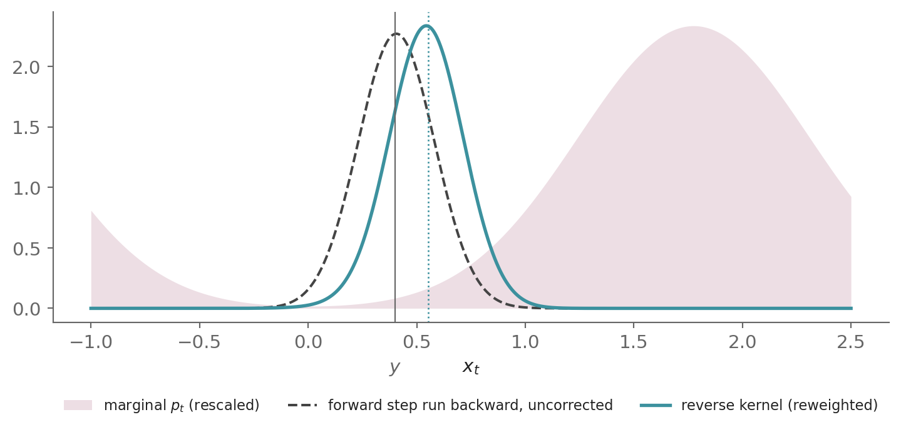
The dashed curve is the forward step run backward, centered at y - f\,\Delta t. Bayes’ rule reweights it by the marginal p_t, which rises toward the mode on the right. The product is the reverse kernel. It is shifted toward higher density, and its center agrees with the first-order mean \mu.
2.3.2 From the Bayes factor to Girsanov’s theorem
The score entered through the Bayes factor p_t(x_t)/p_{t+\Delta t}(y) of Equation 23. As a function of x_t, p(y \mid x_t) is the forward step run backward with no correction. Its mean is y - f\,\Delta t and its covariance g^2 \Delta t\, I. The Bayes factor converts it into the reverse transition. It is a likelihood ratio, the factor by which one density is multiplied to give another.
Multiplied along a path, these factors give, up to the normalizing factor \exp\big(-\int_0^T \nabla_x\!\cdot\! f\, dt\big), a constant for the affine drifts of this post, the likelihood ratio between the distributions of the two processes over whole paths, the Radon-Nikodym derivative of Appendix A.3. Girsanov’s theorem writes that derivative as a stochastic exponential, the exponential of an Itô integral corrected so that its expectation is one. Girsanov’s drift-change formula Equation 40 gives the shift directly.
The theorem of Appendix A.3 runs in increasing time, so it applies to the reversed process in the time \tau, where the drift to install is \psi = g\, \nabla_x \log p_{T-\tau}. Written in the forward time t, where dt < 0, the same change has \psi = -g\, \nabla_x \log p_t and shifts the drift by g\psi = -g^2\, \nabla_x \log p_t, and g is untouched.
A change of measure cannot alter quadratic variation. That is why the forward and reverse processes share the same diffusion coefficient. The time reversal itself is not a change of measure. The time-reversal theory shows that the short-time kernel above has Anderson’s reverse-time diffusion as its continuous-time limit [2], [12].
2.3.3 The risk-neutral parallel
This is the operation a quantitative analyst performs in pricing (Appendix A.3). There, the stock follows post #1’s geometric Brownian motion with drift rate \mu and volatility \sigma, and this \mu is not the reverse mean above. Reweighting by a Radon-Nikodym derivative shifts the drift rate from \mu to the risk-free interest rate r and leaves \sigma untouched.
Here, reweighting by the marginal-density ratio shifts the forward drift f to the reverse drift f - g^2\, \nabla_x \log p_t and leaves g untouched. In both, a change of measure reshapes the drift and never the diffusion. The quantity g\, \nabla_x \log p_t plays the role that the market price of risk (\mu - r)/\sigma, the stock’s excess drift per unit of volatility, plays in finance.
3 The probability-flow ODE
The solution of the reverse-time SDE is not the only process with the marginals p_t. Song et al. [1] show that a deterministic one exists. It solves the probability-flow ODE
\boxed{\frac{dx_t}{dt} = f(x_t, t) - \tfrac{1}{2}\, g(t)^2\, \nabla_x \log p_t(x_t)} \tag{25}
Its solution has the marginals p_t for each t \in (0, T], as the solutions of the forward SDE Equation 1 and the reverse-time SDE Equation 17 do, but its paths are smooth and deterministic, so its joint distribution across times differs from theirs. The ODE can be solved in either direction. Solved forward from the data, it maps each sample to noise deterministically, which Song et al. use to compute exact likelihoods. Solved backward from x_T \sim p_T, it generates samples.
Section 3.1 states the equivalence between the marginal path of an ODE’s solution and the continuity equation, and Section 3.2 uses it to derive the ODE.
3.1 Marginal path ⟺ continuity equation
This section states the equivalence between the marginal path of an ODE’s solution and the continuity equation. An ODE adds no noise, so its solution moves each sample along a deterministic path. Probability paths, marginal paths, test functions, decay at infinity and domination are as defined in Section 2.1.
Definitions:
- The velocity field of an ODE dx_t/dt = v(x_t, t) is v(\cdot, t): \mathbb{R}^d \to \mathbb{R}^d at each time t.
- A trajectory is the path of a single sample, the solution of the ODE from a fixed state at one time.
Assumptions:
- The velocity field v is continuously differentiable and satisfies the Lipschitz and linear-growth conditions of Appendix A.1, with v as the drift and g = 0. So exactly one trajectory passes through each state at each time.
- The ODE dx_t/dt = v(x_t, t) has the initial condition x_{t_0} \sim \rho_{t_0} at a time t_0 \in (0, T] and is solved forward and backward in time from there. Its solution is x_t.
- The probability path \rho_t decays at infinity for each t and is dominated.
Theorem:
Under these assumptions,
\boxed{\begin{aligned} &x_t \sim \rho_t \ \forall t \in (0, T] \\[4pt] \Longleftrightarrow\quad &\partial_t \rho_t(x) = -\nabla_x\!\cdot\!\big(v(x, t)\, \rho_t(x)\big) \ \forall x \in \mathbb{R}^d,\ t \in (0, T] \end{aligned}} \tag{26}
The left side of Equation 26 says that \rho_t is the marginal path of x_t, and the right side is the continuity equation. It states conservation of probability mass. The product v\, \rho_t is the probability flux, the probability mass that crosses a unit area per unit time, and the density at a point changes only by the net outflow of this flux, its divergence.
So the theorem states that the continuity equation is a necessary and sufficient condition for a probability path to be the marginal path of x_t.
- Necessity (\Rightarrow): The marginal path of x_t satisfies the continuity equation.
- Sufficiency (\Leftarrow): A probability path that satisfies the continuity equation is the marginal path of x_t, the solution of dx_t/dt = v(x_t, t) with the initial condition x_{t_0} \sim \rho_{t_0}.
3.1.1 Proof of necessity (⇒)
The ODE is the SDE with drift v and diffusion coefficient g = 0. Post #1’s derivation of the Fokker-Planck equation in its Section 4.10.3 applies Itô’s lemma to a test function and integrates by parts. It holds for g = 0, where Itô’s lemma reduces to the chain rule, with the time integrals taken from t_0 instead of 0, which the chain rule allows in either direction of time. So \rho_t, the marginal path of x_t by the left side of Equation 26, satisfies the Fokker-Planck equation with the drift v and with g = 0,
\partial_t \rho_t = -\nabla_x\!\cdot\!\big(v\, \rho_t\big) + \tfrac{1}{2} \cdot 0 \cdot \Delta_x \rho_t
Dropping the zero diffusion term,
\boxed{\partial_t \rho_t = -\nabla_x\!\cdot\!\big(v\, \rho_t\big)} \tag{27}
which is the continuity equation. \square
3.1.2 Proof of sufficiency (⇐)
The proof is the argument of Section 2.1.2 with g = 0 and the initial condition at t_0, outlined here and given in full below. The solution of the ODE is deterministic, which changes the first two steps.
- The function u(x, t) = \varphi(X_s), the value of \varphi at time s along the trajectory X through x at time t, carries the test function along the trajectories.
- u is constant along each trajectory, so by the chain rule it satisfies the transport equation \partial_t u + v\cdot\nabla_x u = 0, the backward Kolmogorov equation with g = 0.
- When \rho_t satisfies the continuity equation, \int u\, \rho_t\, dx is constant in time, as in Section 2.1.2.
- Comparing its values at t = t_0, where x_{t_0} \sim \rho_{t_0}, and at t = s gives \int \varphi\, \rho_s\, dx = \mathbb{E}[\varphi(x_s)] for each test function, so \rho_s is the density of x_s.
NoteProof: sufficiency of the continuity equation
Let \rho_t satisfy the continuity equation, and fix s \in (0, T] and a test function \varphi.
Step 1 — a function that carries the test function along the trajectories:
Let I be the closed interval between s and t_0. For x \in \mathbb{R}^d and t \in I, let X_\tau, \tau \in I, be the trajectory with X_t = x. With g = 0, the function u of Section 2.1.2 becomes u: \mathbb{R}^d \times I \to \mathbb{R},
u(x, t) = \varphi(X_s)
the value of \varphi at time s along the trajectory through x at time t. At t = s, X_s = x, so u(x, s) = \varphi(x).
Step 3 needs u to be bounded with a bounded gradient. It is bounded because \varphi is. Under assumption 1, the trajectory depends continuously differentiably on x and t, so u is continuously differentiable, and its gradient is bounded once nearby trajectories separate at a bounded rate.
For two trajectories X and Y, the rate of change of \chi(\tau) = \lVert X_\tau - Y_\tau \rVert^2 is 2\,(X_\tau - Y_\tau) \cdot \big(v(X_\tau, \tau) - v(Y_\tau, \tau)\big), at most 2K\chi(\tau) in absolute value, where K is the Lipschitz constant of v. Grönwall’s inequality [14], that \lvert \chi' \rvert \le 2K\chi implies \chi(s) \le \chi(t)\, e^{2K\lvert s - t \rvert}, then shows that two trajectories a distance \delta apart at time t are at most \delta\, e^{K\lvert t - s \rvert} apart at time s.
So, with L the Lipschitz constant of the test function \varphi and X, Y the trajectories through two states x, y a distance \delta apart at time t, \lvert u(x, t) - u(y, t) \rvert = \lvert \varphi(X_s) - \varphi(Y_s) \rvert \le L\, \delta\, e^{K\lvert t - s \rvert}. The gradient of u is therefore bounded by L\, e^{K\lvert t - s \rvert}.
Step 2 — u satisfies the transport equation:
Fix x and t \in I, with X_\tau the trajectory of Step 1. For each \tau \in I, the trajectory through X_\tau at time \tau is X itself, because exactly one trajectory passes through each state at each time (assumption 1). By the definition of u,
u(X_\tau, \tau) = \varphi(X_s)
Differentiating both sides in \tau, the left by the chain rule with dX_\tau/d\tau = v(X_\tau, \tau) and the right, which does not depend on \tau, to zero,
\partial_t u(X_\tau, \tau) + v(X_\tau, \tau)\cdot\nabla_x u(X_\tau, \tau) = 0
Setting \tau = t, where X_t = x,
\partial_t u(x, t) + v(x, t)\cdot\nabla_x u(x, t) = 0
This holds for each x and each t \in I. Together with u(x, s) = \varphi(x) from Step 1, u satisfies the transport equation, the backward Kolmogorov equation of Section 2.1.2 with g = 0,
\partial_t u + v\cdot\nabla_x u = 0, \qquad u(x, s) = \varphi(x)
Steps 3 and 4 — \int \varphi\, \rho_s\, dx equals \mathbb{E}[\varphi(x_s)]:
Step 3 of Section 2.1.2, with g = 0 and the transport equation in place of the backward Kolmogorov equation, shows that \int u\, \rho_t\, dx is constant on I. Its one integration by parts leaves no boundary term because \rho_t decays at infinity (assumption 3), v grows at most linearly (assumption 1) and u is bounded with a bounded gradient (Step 1). Step 4, with the values compared at t = s and t = t_0 and with x_{t_0} \sim \rho_{t_0} (assumption 2), then gives
\int \varphi\, \rho_s\, dx = \mathbb{E}\big[\varphi(x_s)\big]
where the state x_s lies on the trajectory through x_{t_0} at time t_0, so \varphi(x_s) = u(x_{t_0}, t_0). A density that gives every test function its expected value under x_s is the density of x_s, so x_s \sim \rho_s. As s \in (0, T] was arbitrary, x_t \sim \rho_t for each t \in (0, T]. \square
3.2 Deriving the probability-flow ODE using the continuity equation
The derivation has three steps. Step 1 shows that the marginal path p_t satisfies a continuity equation, with a velocity field v = \tilde f built from the drift and the score. Step 2 checks that v = \tilde f and \rho_t = p_t meet the assumptions of the equivalence of Section 3.1. Step 3 combines the two. By the sufficiency part of that equivalence, p_t is the marginal path of the solution of the ODE with velocity field \tilde f, and that ODE is the probability-flow ODE. Appendix A.4 repeats the derivation for the general SDE.
Step 1 — p_t satisfies a continuity equation:
Starting from the Fokker-Planck equation, which p_t satisfies by the necessity part of Equation 18,
\partial_t p_t = -\nabla_x\!\cdot\!\big(f\, p_t\big) + \tfrac{1}{2} g^2\, \Delta_x p_t
Substituting the log-derivative identity from Equation 19 for \Delta_x p_t,
\partial_t p_t = -\nabla_x\!\cdot\!\big(f\, p_t\big) + \nabla_x\!\cdot\!\Big(\tfrac{1}{2} g^2\, p_t\, \nabla_x \log p_t\Big)
Combining into one divergence,
\partial_t p_t = -\nabla_x\!\cdot\!\Big[\Big(f - \tfrac{1}{2} g^2\, \nabla_x \log p_t\Big)\, p_t\Big]
Writing \tilde f = f - \tfrac{1}{2} g^2\, \nabla_x \log p_t for the velocity field, a map \mathbb{R}^d \to \mathbb{R}^d at each time t,
\partial_t p_t = -\nabla_x\!\cdot\!\big(\tilde f\, p_t\big) \tag{28}
So the marginal path p_t, which satisfies the Fokker-Planck equation, also satisfies the continuity equation with the velocity field \tilde f.
Step 2 — the assumptions of the equivalence hold:
The equivalence of Section 3.1 has three assumptions, and each holds for v = \tilde f and \rho_t = p_t.
Assumption 1 — Lipschitz velocity field: The drift f is affine in x for each SDE of this post, so it is Lipschitz. For data with bounded support, Equation 21 with k = 2 bounds the Hessian of \log p_t, so the score \nabla_x \log p_t is Lipschitz in x too, for each t > 0 and uniformly away from t = 0. Both terms of \tilde f are continuously differentiable and Lipschitz, so \tilde f is too, and hence of at most linear growth.
Assumption 2 — initial condition: The ODE dx_t/dt = \tilde f(x_t, t) has the initial condition x_{t_0} \sim p_{t_0} at a time t_0 \in (0, T], and x_t denotes its solution. Solving forward from a t_0 near 0 maps data to noise, and solving backward from t_0 = T generates samples.
Assumption 3 — decay at infinity: The marginal p_t is a Gaussian convolution of data with bounded support, so it is smooth and converges to p_0 as t \to 0, hence a probability path with the initial distribution p_0, it decays at infinity, and it is dominated, because its Gaussian tails, and those of \partial_t p_t, are uniform in t on each [a, b] \subset (0, T].
Step 3 — the sufficiency part applies:
By Step 1, p_t satisfies the continuity equation Equation 28 with v = \tilde f, and by Step 2 the assumptions of Equation 26 hold. Its sufficiency part, with v = \tilde f and \rho_t = p_t, therefore makes p_t the marginal path of x_t, the solution of the ODE dx_t/dt = \tilde f(x_t, t) with the initial condition x_{t_0} \sim p_{t_0}, for each t_0 \in (0, T]. Writing \tilde f out, the ODE is
\boxed{\frac{dx_t}{dt} = f(x_t, t) - \tfrac{1}{2}\, g(t)^2\, \nabla_x \log p_t(x_t)}
which is Equation 25. \square
3.2.1 Comparison with the reverse-time SDE
The reverse-time SDE comes from a different split of the same Fokker-Planck equation. The probability-flow ODE converts the whole diffusion term into part of the drift and keeps no diffusion, while Section 2.2 converts twice the diffusion term and keeps a diffusion term of the opposite sign, which becomes a diffusion once time is reversed. Section 2.2.1 places both in one family of processes with the marginals p_t, in which the probability-flow ODE is the member without noise.
3.2.2 Probability-flow trajectories
Simulating the probability-flow ODE:
Generating with the probability-flow ODE is an ODE solve, so each initial condition x_T leads to a single x_0. Here we integrate it for the two-mode example of Figure 5, with the same initial conditions, as Figure 7 shows below.
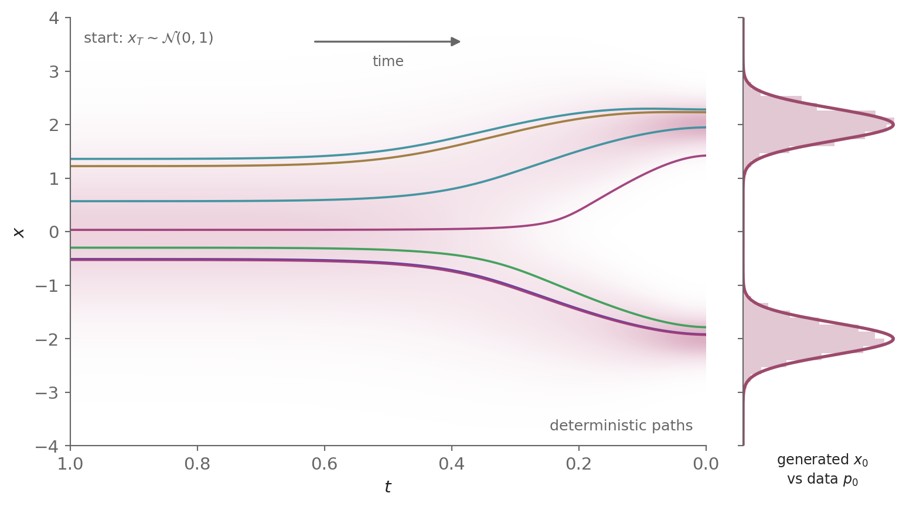
Each path is smooth and deterministic, unlike the reverse-time SDE paths of Figure 5, yet the endpoints have the same distribution, the data distribution p_0.
4 Training: learning the score by denoising score matching
The reverse-time SDE has one unknown, the score \nabla_x \log p_t. It cannot be learned by regressing on it directly, because p_t is unknown. Denoising score matching (DSM) [4] removes the obstacle, as it did in post #2 for a single noise level. The perturbation kernel p_{0t}(x_t \mid x_0) is a known Gaussian, so its score is available in closed form, and a regression on that score has the marginal score as its minimizer.
A score-based model s_\theta: \mathbb{R}^d \times [0, T] \to \mathbb{R}^d, a neural network with parameters \theta, estimates the score at each state and time. Its training objective is the weighted DSM objective,
\boxed{\mathcal{L}_{\mathrm{DSM}_{p_t}}(\theta; \lambda) = \mathbb{E}_{t}\,\Big\{ \lambda(t)\, \mathbb{E}_{x_0}\, \mathbb{E}_{x_t \mid x_0} \big[\, \| s_\theta(x_t, t) - \nabla_{x_t} \log p_{0t}(x_t \mid x_0) \|^2 \,\big] \Big\}} \tag{29}
with t sampled uniformly from [0, T], a weighting \lambda: [0, T] \to [0, \infty), positive on (0, T], x_0 \sim p_0, and x_t \mid x_0 sampled from the perturbation kernel. For an SDE whose kernel has no closed form, Appendix A.4 replaces DSM by sliced score matching.
4.1 The minimizer of the weighted DSM objective
The weighted DSM objective Equation 29 regresses on the score of the kernel, which is known, while the reverse-time SDE needs the score of the marginal, which is not. This section shows that the regression nevertheless learns the marginal score.
At each time t, Equation 29 contains the DSM objective at time t,
\mathcal{L}_{\mathrm{DSM}_{p_t}}(\theta) = \mathbb{E}_{x_0}\, \mathbb{E}_{x_t \mid x_0}\big[\tfrac{1}{2}\lVert s_\theta(x_t, t) - \nabla_{x_t} \log p_{0t}(x_t \mid x_0)\rVert^{2}\big]
and Equation 29 is its average over t with the weight 2\lambda(t), \mathcal{L}_{\mathrm{DSM}_{p_t}}(\theta; \lambda) = \mathbb{E}_t\big\{2\lambda(t)\, \mathcal{L}_{\mathrm{DSM}_{p_t}}(\theta)\big\}.
Theorem:
For each t \in (0, T], the DSM objective at time t, \mathcal{L}_{\mathrm{DSM}_{p_t}}, is minimized over s_\theta(\cdot, t) by the marginal score, s_\theta(\cdot, t) = \nabla_x \log p_t. So a model flexible enough to represent the score for each t minimizes Equation 29 with the marginal score for each t \in (0, T].
Proof:
Post #2 defined the DSM objective for one noise level \sigma, Eq. (24) of post #2,
\mathcal{L}_{\mathrm{DSM}_{p_\sigma}}(\theta)=\mathbb{E}_{p_\sigma(x,\tilde{x})}\big[\tfrac{1}{2}\lVert s_\theta(\tilde{x})-\nabla_{\tilde{x}}\log p_\sigma(\tilde{x}\mid x)\rVert^{2}\big]
Its joint p_\sigma(x, \tilde x) = \hat p(x)\, p_\sigma(\tilde x \mid x) pairs the empirical distribution \hat p of the training set with the perturbation kernel p_\sigma(\tilde x \mid x). Fix t. Four substitutions turn it into an objective for the forward SDE at time t.
- The data distribution p_0 replaces the empirical \hat p, the population form of the objective.
- The perturbation kernel p_{0t}(x_t \mid x_0) of the forward SDE replaces p_\sigma(\tilde x \mid x), with x_0 for x and x_t for \tilde x.
- The joint p_t(x_0, x_t) = p_0(x_0)\, p_{0t}(x_t \mid x_0), the joint distribution of the forward process at times 0 and t, replaces p_\sigma(x, \tilde x) = \hat p(x)\, p_\sigma(\tilde x \mid x), the product of the two replacements above.
- The model has the time as a second argument, s_\theta(x_t, t).
The result is \mathcal{L}_{\mathrm{DSM}_{p_t}}, the DSM objective at time t defined above.
The objective that regresses on the marginal score directly is the explicit score matching (ESM) objective at time t,
\mathcal{L}_{\mathrm{ESM}_{p_t}}(\theta) = \mathbb{E}_{p_t}\big[\tfrac{1}{2}\lVert s_\theta(x_t, t) - \nabla_{x_t} \log p_t(x_t)\rVert^{2}\big]
Post #2 proved that the two differ only by a constant, Eq. (25) of post #2. Its proof used three facts about the setup, and each holds here.
Fact 1 — the joint density: The joint density is the base distribution times the kernel. Here it is the joint p_t(x_0, x_t).
Fact 2 — the perturbed density: The perturbed density is the integral of the joint over the base variable. Here it is the marginal, p_t(x_t) = \int p_{0t}(x_t \mid x_0)\, p_0(x_0)\, dx_0.
Fact 3 — the gradient under the integral: The gradient in x_t may be taken under that integral. In post #2 the integral was a finite sum, so this needed no argument. Here it needs a bound on the gradient of the integrand that is integrable in x_0 and the same for each x_t.
Writing out the kernel Equation 3 with y = x_t - m(t)\, x_0,
p_{0t}(x_t \mid x_0) = \big(2\pi\Sigma(t)\big)^{-d/2}\, e^{-\lVert y \rVert^2/(2\Sigma(t))}
Differentiating in x_t, with \nabla_{x_t} y = I,
\nabla_{x_t} p_{0t}(x_t \mid x_0) = -\frac{y}{\Sigma(t)}\, \big(2\pi\Sigma(t)\big)^{-d/2}\, e^{-\lVert y \rVert^2/(2\Sigma(t))}
Taking the norm of both sides,
\big\lVert \nabla_{x_t} p_{0t}(x_t \mid x_0) \big\rVert = \frac{\lVert y \rVert\, e^{-\lVert y \rVert^2/(2\Sigma(t))}}{\Sigma(t)}\, \big(2\pi\Sigma(t)\big)^{-d/2}
Bounding \lVert y \rVert\, e^{-\lVert y \rVert^2/(2\Sigma(t))} by its maximum \sqrt{\Sigma(t)}\, e^{-1/2}, attained at \lVert y \rVert = \sqrt{\Sigma(t)},
\big\lVert \nabla_{x_t} p_{0t}(x_t \mid x_0) \big\rVert \le \frac{e^{-1/2}}{\sqrt{\Sigma(t)}}\, \big(2\pi\Sigma(t)\big)^{-d/2}
Multiplying both sides by p_0(x_0),
\big\lVert p_0(x_0)\, \nabla_{x_t} p_{0t}(x_t \mid x_0) \big\rVert \le \frac{e^{-1/2}}{\sqrt{\Sigma(t)}}\, \big(2\pi\Sigma(t)\big)^{-d/2}\, p_0(x_0)
The right side does not depend on x_t, and its integral over x_0 is e^{-1/2}\, \Sigma(t)^{-1/2}\, \big(2\pi\Sigma(t)\big)^{-d/2}, finite for t > 0. An integrable bound of this kind, the same for each x_t, is a dominating function, and it permits differentiation under the integral sign.
Post #2’s theorem therefore holds at each t,
\mathcal{L}_{\mathrm{ESM}_{p_t}}(\theta) = \mathcal{L}_{\mathrm{DSM}_{p_t}}(\theta) + C_t, \qquad \frac{\partial C_t}{\partial \theta} = 0
The explicit objective is non-negative, and it is zero when s_\theta(\cdot, t) = \nabla_x \log p_t, so the marginal score is its minimizer. The two objectives differ by a constant, so the DSM objective at time t has the same minimizer. Equation 29 weights these objectives by 2\lambda(t), positive for t > 0, and averages them over t. For a model flexible enough to represent the score for each t, minimizing the average minimizes each of them, so the minimizer of Equation 29 is the marginal score for each t \in (0, T]. \square
4.2 The noise-prediction loss shared by the ELBO and DSM
Post #2 trained the two lineages with different objectives. The variational route bounded the log-likelihood by the evidence lower bound (ELBO) and, by dropping its time-dependent weights, reached DDPM’s simple objective, a noise-prediction loss. The score-based route trained by DSM, which post #2 also rewrote as a noise-prediction loss, at a different perturbation of the data. Whether the two routes lead to one loss was left open.
They do. On DDPM’s own perturbation, the weighted DSM objective Equation 29 with the weighting \lambda(t) = 1 - \bar\alpha(t) is DDPM’s simple objective, once the network’s output is parameterized as a noise prediction. The two lineages therefore train on the same loss and differ only in the weighting \lambda(t) and in how the network’s output is parameterized. The full ELBO, with its weights kept, corresponds to another choice of \lambda, the likelihood weighting that Appendix A.2 of post #4 develops.
Showing this takes two steps. DDPM’s simple objective averages over N discrete steps, while Equation 29 averages over continuous time, so the first subsection below converts the simple objective to continuous time, and the second derives the result from Equation 29.
4.2.1 Converting DDPM’s simple objective to continuous time
DDPM’s simple objective, Eq. (13) of post #2, is
L_{\text{simple}}(\theta) = \mathbb{E}_{i,\, x_0,\, \epsilon}\big[\lVert \epsilon - \epsilon_\theta\big(\sqrt{\bar\alpha_i}\, x_0 + \sqrt{1 - \bar\alpha_i}\, \epsilon,\ i\big)\rVert^2\big]
In it, i is sampled uniformly from \{1, \ldots, N\}, x_0 \sim p_0 and \epsilon \sim \mathcal{N}(0, I), and \epsilon_\theta(\cdot, i): \mathbb{R}^d \to \mathbb{R}^d is the denoising network’s prediction of the noise \epsilon at step i. The steps sit on the partition of [0, T] of Section 1.2, with the step width \Delta t = T/N, the grid times t_i = i\, \Delta t and the discrete noise schedule \beta_i = \beta(t_i)\, \Delta t.
Indexing every quantity by the grid time t_i instead of the step i, with t_i as the network’s second input and the cumulative product written as \bar\alpha^{(N)}(t_i) = \bar\alpha_i = \prod_{j=1}^{i} \big(1 - \beta(t_j)\, \Delta t\big), a product over the grid times up to t_i,
L_{\text{simple}}(\theta) = \mathbb{E}_{t_i,\, x_0,\, \epsilon}\big[\lVert \epsilon - \epsilon_\theta\big(\sqrt{\bar\alpha^{(N)}(t_i)}\, x_0 + \sqrt{1 - \bar\alpha^{(N)}(t_i)}\, \epsilon,\ t_i\big)\rVert^2\big]
with t_i sampled uniformly from the grid \{t_1, \ldots, t_N\}.
Writing the uniform average over the grid times as a sum,
L_{\text{simple}}(\theta) = \frac{1}{N} \sum_{i=1}^{N} \mathbb{E}_{x_0,\, \epsilon}\big[\lVert \epsilon - \epsilon_\theta\big(\sqrt{\bar\alpha^{(N)}(t_i)}\, x_0 + \sqrt{1 - \bar\alpha^{(N)}(t_i)}\, \epsilon,\ t_i\big)\rVert^2\big]
Writing 1/N as \Delta t / T,
L_{\text{simple}}(\theta) = \frac{1}{T} \sum_{i=1}^{N} \mathbb{E}_{x_0,\, \epsilon}\big[\lVert \epsilon - \epsilon_\theta\big(\sqrt{\bar\alpha^{(N)}(t_i)}\, x_0 + \sqrt{1 - \bar\alpha^{(N)}(t_i)}\, \epsilon,\ t_i\big)\rVert^2\big]\, \Delta t
Letting N \to \infty, where the discrete cumulative product converges to the continuous one, \bar\alpha^{(N)}(t_i) \to \bar\alpha(t_i) with \bar\alpha(t) = \exp\big(-\int_0^t \beta(s)\, ds\big) (Eq. (31) of post #1), uniformly over the grid because, for a bounded \beta of bounded variation such as the linear schedule, the two exponents differ by O(\Delta t) at each t_i. For a network continuous in its inputs and of at most linear growth, with p_0 of finite second moment, the sum then differs by a vanishing amount from a Riemann sum of an integrand continuous in t, which converges to an integral,
\lim_{N \to \infty} L_{\text{simple}}(\theta) = \frac{1}{T} \int_0^T \mathbb{E}_{x_0,\, \epsilon}\big[\lVert \epsilon - \epsilon_\theta\big(\sqrt{\bar\alpha(t)}\, x_0 + \sqrt{1 - \bar\alpha(t)}\, \epsilon,\ t\big)\rVert^2\big]\, dt
Writing \tfrac{1}{T}\int_0^T \cdots\, dt as the expectation over t \sim \mathcal{U}[0, T], and writing L_{\text{simple}}(\theta) also for this limit, the continuous-time simple objective,
\boxed{L_{\text{simple}}(\theta) = \mathbb{E}_{t, x_0, \epsilon}\left[\,\left\|\epsilon - \epsilon_\theta\!\left(\sqrt{\bar\alpha(t)}\, x_0 + \sqrt{1 - \bar\alpha(t)}\, \epsilon,\ t\right)\right\|^2\,\right]} \tag{30}
On the grid, DDPM’s smallest step time, t_1 = T/N, keeps t above 0, as Part 2 requires.
4.2.2 Deriving the continuous-time simple objective from the weighted DSM objective
Theorem:
For the VP-SDE, DSM and the ELBO route give the same noise-prediction loss. With the score-based model parameterized as s_\theta(x_t, t) = -\epsilon_\theta(x_t, t)/\sqrt{1 - \bar\alpha(t)} and the weighting \lambda(t) = 1 - \bar\alpha(t), the weighted DSM objective Equation 29 equals DDPM’s continuous-time simple objective Equation 30.
Proof:
Starting from Equation 29,
\mathcal{L}_{\mathrm{DSM}_{p_t}}(\theta; \lambda) = \mathbb{E}_{t}\,\Big\{ \lambda(t)\, \mathbb{E}_{x_0}\, \mathbb{E}_{x_t \mid x_0} \big[\, \| s_\theta(x_t, t) - \nabla_{x_t} \log p_{0t}(x_t \mid x_0) \|^2 \,\big] \Big\}
Substituting the log-density of the VP perturbation kernel Equation 12,
\log p_{0t}(x_t \mid x_0) = -\lVert x_t - \sqrt{\bar\alpha(t)}\, x_0\rVert^2 / \big(2\,(1 - \bar\alpha(t))\big) + \text{const}
into the previous line,
\mathcal{L}_{\mathrm{DSM}_{p_t}}(\theta; \lambda) = \mathbb{E}_{t}\,\Big\{ \lambda(t)\, \mathbb{E}_{x_0}\, \mathbb{E}_{x_t \mid x_0} \Big[\, \Big\| s_\theta(x_t, t) + \nabla_{x_t}\frac{\lVert x_t - \sqrt{\bar\alpha(t)}\, x_0\rVert^2}{2\,(1 - \bar\alpha(t))} \Big\|^2 \,\Big] \Big\}
Differentiating with the gradient \nabla_{x_t}\lVert x_t - \sqrt{\bar\alpha(t)}\, x_0\rVert^2 = 2\big(x_t - \sqrt{\bar\alpha(t)}\, x_0\big),
\mathcal{L}_{\mathrm{DSM}_{p_t}}(\theta; \lambda) = \mathbb{E}_{t}\,\Big\{ \lambda(t)\, \mathbb{E}_{x_0}\, \mathbb{E}_{x_t \mid x_0} \Big[\, \Big\| s_\theta(x_t, t) + \frac{x_t - \sqrt{\bar\alpha(t)}\, x_0}{1 - \bar\alpha(t)} \Big\|^2 \,\Big] \Big\}
Sampling x_t through the reparameterization of Equation 12, with \epsilon \sim \mathcal{N}(0, I),
x_t \;=\; \sqrt{\bar\alpha(t)}\, x_0 \;+\; \sqrt{1 - \bar\alpha(t)}\, \epsilon \tag{31}
the residual x_t - \sqrt{\bar\alpha(t)}\, x_0 becomes \sqrt{1 - \bar\alpha(t)}\, \epsilon, and
\mathcal{L}_{\mathrm{DSM}_{p_t}}(\theta; \lambda) = \mathbb{E}_{t}\,\Big\{ \lambda(t)\, \mathbb{E}_{x_0,\, \epsilon} \Big[\, \Big\| s_\theta(x_t, t) + \frac{\epsilon}{\sqrt{1 - \bar\alpha(t)}} \Big\|^2 \,\Big] \Big\}
Parameterizing the score-based model as s_\theta(x_t, t) = -\epsilon_\theta(x_t, t)/\sqrt{1 - \bar\alpha(t)}, so that the network outputs a noise prediction rescaled into a score estimate,
\mathcal{L}_{\mathrm{DSM}_{p_t}}(\theta; \lambda) = \mathbb{E}_{t}\,\Big\{ \lambda(t)\, \mathbb{E}_{x_0,\, \epsilon} \Big[\, \Big\| -\frac{\epsilon_\theta(x_t, t)}{\sqrt{1 - \bar\alpha(t)}} + \frac{\epsilon}{\sqrt{1 - \bar\alpha(t)}} \Big\|^2 \,\Big] \Big\}
Factoring 1/\sqrt{1 - \bar\alpha(t)} out of the norm, where it is squared,
\mathcal{L}_{\mathrm{DSM}_{p_t}}(\theta; \lambda) = \mathbb{E}_{t}\,\Big\{ \frac{\lambda(t)}{1 - \bar\alpha(t)}\, \mathbb{E}_{x_0,\, \epsilon} \big[\, \|\epsilon \,-\, \epsilon_\theta(x_t, t)\|^2 \,\big] \Big\}
Choosing the DDPM weighting \lambda(t) = 1 - \bar\alpha(t), which cancels the denominator,
\mathcal{L}_{\mathrm{DSM}_{p_t}}(\theta; \lambda) = \mathbb{E}_{t}\,\Big\{ \mathbb{E}_{x_0,\, \epsilon} \big[\, \|\epsilon \,-\, \epsilon_\theta(x_t, t)\|^2 \,\big] \Big\}
Writing x_t in the form of Equation 31,
\boxed{L_{\text{simple}}(\theta) \;=\; \mathbb{E}_{t,\, x_0,\, \epsilon}\!\left[\,\big\|\, \epsilon \,-\, \epsilon_\theta\!\big(\sqrt{\bar\alpha(t)}\, x_0 \,+\, \sqrt{1 - \bar\alpha(t)}\, \epsilon,\;\, t\big)\,\big\|^2\,\right]}
which is Equation 30. \square
So the ELBO route of post #2 and DSM lead to the same noise-prediction loss. The weighting \lambda(t) = 1 - \bar\alpha(t) corresponds to DDPM’s unweighted form, which Ho et al. preferred empirically for image generation and which drops the time-dependent weights the ELBO itself prescribes [5].
4.2.3 Other linear SDEs and the weighting rule
The steps of the proof above go through for each linear SDE. With a general kernel \mathcal{N}\big(m(t)\, x_0,\, \Sigma(t)\, I\big) (Equation 3), replace \sqrt{\bar\alpha(t)} by m(t) and 1 - \bar\alpha(t) by \Sigma(t): parameterize s_\theta = -\epsilon_\theta/\sqrt{\Sigma(t)}, choose \lambda(t) = \Sigma(t), and sample x_t = m(t)\, x_0 + \sqrt{\Sigma(t)}\, \epsilon. The VE and sub-VP SDEs of Section 1.3 and Section 1.4 therefore give the same noise-prediction loss, with their own m(t) and \Sigma(t).
The weighting \lambda(t) = \Sigma(t) is the rule Song et al. recommend, \lambda(t) \propto 1 / \mathbb{E}\lVert \nabla_{x_t} \log p_{0t}(x_t \mid x_0) \rVert^2 [1]. The conditional score is -\epsilon/\sqrt{\Sigma(t)}, whose expected squared norm is \mathbb{E}\lVert\epsilon\rVert^2/\Sigma(t) = d/\Sigma(t), so the rule gives \lambda(t) \propto \Sigma(t). With it, \lambda(t) times the expected squared norm of the regression target is \Sigma(t) \cdot d/\Sigma(t) = d for each t, so each time contributes to Equation 29 on the same scale.
5 Sampling: solving the reverse-time SDE
Generation is numerical integration. Training produced s_\theta(x_t, t), an estimate of the score at each time. Substituting it for the unknown \nabla_x \log p_t in Equation 17 leaves a reverse-time SDE with no unknown terms, well-posed when the network drift is Lipschitz (Appendix A.1). Sampling solves that equation backward, with its initial condition at t = T, and the paths of Figure 5 are this integration with an analytic score in place of a trained one.
On the grid t_i = i\,\Delta t of Section 1.2, with \Delta t = T/N, write x_i for the sampler’s approximation of \bar x_{t_i}. Each sampler below is a scheme on this grid. Algorithms 4 and 5 evaluate the score at t_N, \ldots, t_1 only, so their last score evaluation, at t_1 = T/N, serves as the cutoff t_{\min} of Part 2. The corrector of Algorithm 6 also evaluates the score at t_0, so with a corrector the grid starts at the cutoff, t_i = t_{\min} + i\, \Delta t with \Delta t = (T - t_{\min})/N, as in Song et al. [1].
5.1 Reverse diffusion sampling
Writing Equation 24 on the grid, with the score-based model in place of the true score and with f, g and the score evaluated at the step’s start time t_i rather than at t_{i-1}, a change of higher order in \Delta t per step that keeps the score away from t = 0,
\boxed{x_{i-1} = x_i - \big[\,f(x_i, t_i) - g(t_i)^2\, s_\theta(x_i, t_i)\,\big]\Delta t \;+\; g(t_i)\sqrt{\Delta t}\; z} \tag{32}
with a fresh z \sim \mathcal{N}(0, I) at each step. The loop this defines is the whole sampler.
Algorithm 4 — Reverse diffusion sampling [1]:
1: x_N \sim p(x_N)
2: for i = N, \ldots, 1 do
3: z \sim \mathcal{N}(0, I)
4: x_{i-1} = x_i - \big[f(x_i, t_i) - g(t_i)^2\, s_\theta(x_i, t_i)\big]\Delta t + g(t_i)\sqrt{\Delta t}\; z
5: end for
6: return x_0
2: for i = N, \ldots, 1 do
3: z \sim \mathcal{N}(0, I)
4: x_{i-1} = x_i - \big[f(x_i, t_i) - g(t_i)^2\, s_\theta(x_i, t_i)\big]\Delta t + g(t_i)\sqrt{\Delta t}\; z
5: end for
6: return x_0
The prior p(x_N) on line 1 approximates the terminal marginal p_T of the forward process: \mathcal{N}(0, I) for the VP and sub-VP SDEs, and \mathcal{N}\big(0, \sigma_{\max}^2 I\big) for the VE-SDE. Nothing else enters. The drift and diffusion are the modeler’s own choice of forward process, and the network supplies the one quantity the forward pass discarded.
The Variance-Preserving instance:
Write \beta_i = \beta(t_i)\,\Delta t for the noise added over one step.
Substituting f = -\tfrac{1}{2}\beta(t)\, x and g = \sqrt{\beta(t)} into Equation 32,
\boxed{x_{i-1} = \Big(1 + \tfrac{1}{2}\beta_i\Big) x_i \;+\; \beta_i\, s_\theta(x_i, t_i) \;+\; \sqrt{\beta_i}\; z} \tag{33}
Song et al. write the leading coefficient as 2 - \sqrt{1-\beta_i}, which agrees with 1 + \tfrac{1}{2}\beta_i to first order in \beta_i and mirrors the \sqrt{1-\beta_i} appearing in the forward discretization. That matched pairing is their reverse diffusion sampler [1].
The Variance-Exploding instance:
Here f = 0 and g^2 = \tfrac{d}{dt}\sigma^2(t), so g(t_i)^2\, \Delta t \approx \sigma^2(t_i) - \sigma^2(t_{i-1}), the noise variance added over one step and the counterpart of \beta_i. Substituting into Equation 32,
x_{i-1} = x_i + \big(\sigma^2(t_i) - \sigma^2(t_{i-1})\big)\, s_\theta(x_i, t_i) + \sqrt{\sigma^2(t_i) - \sigma^2(t_{i-1})}\; z
5.2 Ancestral sampling
Post #2’s ancestral sampler is the VP instance of Equation 32, discretized differently. It was derived from the variational reverse Markov chain, with no SDE anywhere in its construction. It uses \alpha_i = 1 - \beta_i and \bar\alpha_i = \prod_{j \le i}\alpha_j.
Algorithm 5 — Ancestral sampling [5]:
1: x_N \sim \mathcal{N}(0, I)
2: for i = N, \ldots, 1 do
3: z \sim \mathcal{N}(0, I) if i > 1, else z = 0
4: \mu_\theta \leftarrow \frac{1}{\sqrt{\alpha_i}}\Big(x_i - \frac{\beta_i}{\sqrt{1 - \bar\alpha_i}}\, \epsilon_\theta(x_i, i)\Big)
5: x_{i-1} \leftarrow \mu_\theta + \sigma_i\, z
6: end for
7: return x_0
2: for i = N, \ldots, 1 do
3: z \sim \mathcal{N}(0, I) if i > 1, else z = 0
4: \mu_\theta \leftarrow \frac{1}{\sqrt{\alpha_i}}\Big(x_i - \frac{\beta_i}{\sqrt{1 - \bar\alpha_i}}\, \epsilon_\theta(x_i, i)\Big)
5: x_{i-1} \leftarrow \mu_\theta + \sigma_i\, z
6: end for
7: return x_0
The deterministic part is the reverse drift in noise-prediction form, and the \sigma_i z term is the retained diffusion, with \sigma_i^2 = \beta_i or the posterior variance of post #2,
\tilde\beta_i = \frac{1-\bar\alpha_{i-1}}{1-\bar\alpha_i}\,\beta_i
Both appear in [5].
Starting from lines 4 and 5 of Algorithm 5,
x_{i-1} = \frac{1}{\sqrt{\alpha_i}}\Big(x_i - \frac{\beta_i}{\sqrt{1 - \bar\alpha_i}}\, \epsilon_\theta(x_i, i)\Big) + \sigma_i\, z
Substituting \epsilon_\theta = -\sqrt{1 - \bar\alpha_i}\, s_\theta, the relation of Section 4.2,
x_{i-1} = \frac{1}{\sqrt{\alpha_i}}\big(x_i + \beta_i\, s_\theta(x_i, t_i)\big) + \sigma_i\, z
Writing \alpha_i = 1 - \beta_i,
x_{i-1} = \frac{1}{\sqrt{1-\beta_i}}\big(x_i + \beta_i\, s_\theta(x_i, t_i)\big) + \sigma_i\, z
Taking \sigma_i^2 = \beta_i,
x_{i-1} = \frac{1}{\sqrt{1-\beta_i}}\big(x_i + \beta_i\, s_\theta(x_i, t_i)\big) + \sqrt{\beta_i}\; z
Expanding (1-\beta_i)^{-1/2} = 1 + \tfrac{1}{2}\beta_i + O(\beta_i^2),
x_{i-1} = \Big(1 + \tfrac{1}{2}\beta_i\Big)\big(x_i + \beta_i\, s_\theta(x_i, t_i)\big) + \sqrt{\beta_i}\; z + O(\beta_i^2)
Multiplying out, with the resulting \tfrac{1}{2}\beta_i^2\, s_\theta absorbed into the remainder,
x_{i-1} = \Big(1 + \tfrac{1}{2}\beta_i\Big) x_i + \beta_i\, s_\theta(x_i, t_i) + \sqrt{\beta_i}\; z + O(\beta_i^2)
which is Equation 33 to first order in \beta_i. \square
The two samplers therefore solve one equation by two numerical schemes [1]. Post #2 reached its update by bounding a likelihood, and this Part reached its own by discretizing a time reversal. The agreement shown for the training objective in Section 4.2 extends to the generative procedure itself.
Ancestral sampling for SMLD:
The same construction applies to the VE side [1]. Take the noising chain of Section 1.3 and set \sigma(t_0) = 0, Song et al.’s simplification and the idealization \sigma_{\min} \to 0 of that section, so that x_i \mid x_0 \sim \mathcal{N}\big(x_0, \sigma^2(t_i)\, I\big). Given x_0, the pair (x_{i-1}, x_i) is jointly Gaussian, with variances \sigma^2(t_{i-1}) I and \sigma^2(t_i) I and covariance \sigma^2(t_{i-1}) I, because x_i adds independent noise to x_{i-1}. For a jointly Gaussian pair (a, b), \mathbb{E}[a \mid b] = \mathbb{E}a + \operatorname{Cov}(a, b)\operatorname{Var}(b)^{-1}(b - \mathbb{E}b) and \operatorname{Var}(a \mid b) = \operatorname{Var}(a) - \operatorname{Cov}(a, b)\operatorname{Var}(b)^{-1}\operatorname{Cov}(b, a).
Conditioning x_{i-1} on x_i by these formulas, the true reverse posterior is
q(x_{i-1} \mid x_i, x_0) = \mathcal{N}\Big(x_{i-1};\; x_0 + \frac{\sigma^2(t_{i-1})}{\sigma^2(t_i)}\,(x_i - x_0),\; \frac{\sigma^2(t_{i-1})\,(\sigma^2(t_i) - \sigma^2(t_{i-1}))}{\sigma^2(t_i)}\, I\Big)
The learned reverse step replaces the unknown x_0 by its posterior mean given x_i. For this kernel, Tweedie’s formula, Eq. (27) of post #2, states \mathbb{E}[x_0 \mid x_i] = x_i + \sigma^2(t_i)\, \nabla_x \log p_{t_i}(x_i), estimated by x_i + \sigma^2(t_i)\, s_\theta(x_i, t_i).
Substituting this estimate for x_0 in the posterior mean,
\mu_\theta(x_i) = x_i + \sigma^2(t_i)\, s_\theta(x_i, t_i) - \frac{\sigma^2(t_{i-1})}{\sigma^2(t_i)}\, \sigma^2(t_i)\, s_\theta(x_i, t_i)
Combining the two score terms,
\mu_\theta(x_i) = x_i + \big(\sigma^2(t_i) - \sigma^2(t_{i-1})\big)\, s_\theta(x_i, t_i)
Sampling with the posterior variance, the ancestral step is
x_{i-1} = x_i + \big(\sigma^2(t_i) - \sigma^2(t_{i-1})\big)\, s_\theta(x_i, t_i) + \sqrt{\frac{\sigma^2(t_{i-1})\,(\sigma^2(t_i) - \sigma^2(t_{i-1}))}{\sigma^2(t_i)}}\; z
It has the drift of the VE instance of Equation 32 and an injected variance smaller by the factor \sigma^2(t_{i-1})/\sigma^2(t_i), which tends to 1 as the grid is refined. Song et al. reach the same step by matching a term of the ELBO, as DDPM does.
5.3 Predictor-corrector sampling
Algorithm 4 is a predictor, a scheme that advances the state one step down the time grid. Each pass is one Euler-Maruyama step, and two errors accumulate with no mechanism for removing them. The step is finite, so the discretization is inexact, and s_\theta is only an estimate, so the drift is inexact as well.
But the network returns the score at every time, not only along the path the sampler follows. The score at a fixed t is what the Langevin Markov chain Monte Carlo (MCMC) sampler of Part 2 of post #2 needs to sample p_t. Interleaving M Langevin steps at the current time after each step of Algorithm 4, each of the form
x_{i-1} \;\leftarrow\; x_{i-1} + \varepsilon\, s_\theta(x_{i-1}, t_{i-1}) + \sqrt{2\varepsilon}\; z
drives the state back toward p_{t_{i-1}} before the next step. These Langevin steps are the corrector, which corrects the state at a fixed time instead of advancing it.
The step size is fixed by a target ratio r between the score term and the injected noise [1],
r = \lVert \varepsilon\, s_\theta \rVert / \lVert \sqrt{2\varepsilon}\, z \rVert
which inverts to
\varepsilon = 2\big(r\, \lVert z \rVert / \lVert s_\theta \rVert\big)^2
Algorithm 6 — Predictor-corrector sampling [1]:
1: x_N \sim p(x_N)
2: for i = N, \ldots, 1 do
3: x_{i-1} \leftarrow one step of Algorithm 4 from x_i
4: for j = 1, \ldots, M do
5: z \sim \mathcal{N}(0, I)
6: x_{i-1} \leftarrow x_{i-1} + \varepsilon\, s_\theta(x_{i-1}, t_{i-1}) + \sqrt{2\varepsilon}\; z
7: end for
8: end for
9: return x_0
2: for i = N, \ldots, 1 do
3: x_{i-1} \leftarrow one step of Algorithm 4 from x_i
4: for j = 1, \ldots, M do
5: z \sim \mathcal{N}(0, I)
6: x_{i-1} \leftarrow x_{i-1} + \varepsilon\, s_\theta(x_{i-1}, t_{i-1}) + \sqrt{2\varepsilon}\; z
7: end for
8: end for
9: return x_0
Adding corrector steps:
The two-mode example keeps t_0 = 0 on this grid, because its exact score, with modes of standard deviation 0.3, is Lipschitz there. Here we compare, on the two-mode example of Figure 2 with the exact score, the predictor alone on a coarse grid of N = 10 steps, the same grid with M = 3 corrector steps per level, and the predictor alone with N = 40 steps, as Figure 8 shows below.
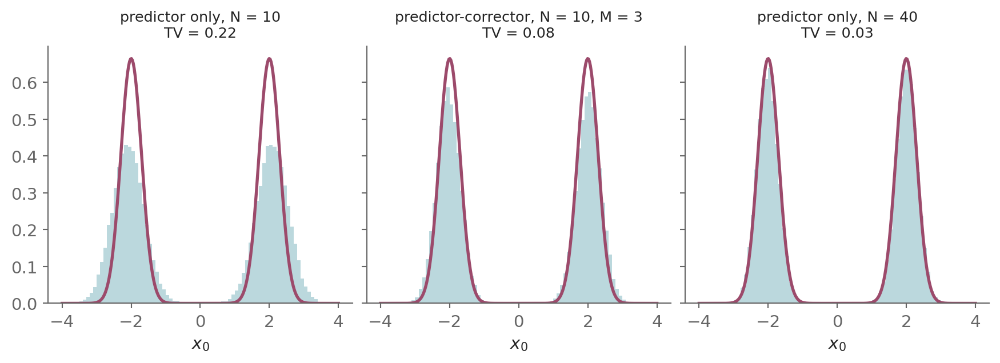
Three corrector steps per level bring the samples much closer to p_0, at the cost of three extra score evaluations per step. In this example a predictor-only run with the same 40 evaluations does better still, since the score is exact and the only error is the discretization. With a learned score on CIFAR-10, Song et al. found one corrector step per predictor step typically better than doubling the predictor steps [1].
This arrangement names the samplers already met. Using the predictor alone is Algorithm 4. Using the corrector alone, applied along a decreasing sequence of noise levels, is the annealed Langevin dynamics of Part 4 of post #2. Using both is the predictor-corrector sampler, and post #2’s sampler over a finite sequence of noise levels is the corrector half of a scheme whose other half only became available once the reverse-time SDE was written down.
5.4 Denoising the final sample
The final step of Algorithms 4 and 6 still injects noise, so the sample they return carries a little of it. A single application of Tweedie’s formula, Eq. (27) of post #2, removes it. For the kernel \mathcal{N}\big(m(t)\, x_0,\, \Sigma(t)\, I\big) the formula becomes
\mathbb{E}[x_0 \mid x_t] = \frac{x_t + \Sigma(t)\, \nabla_x \log p_t(x_t)}{m(t)}
Applied at the last noisy state x_1, with s_\theta(x_1, t_1) in place of the score, it replaces the final step by the posterior mean \mathbb{E}[x_0 \mid x_1], which is reported instead. Post #2’s ancestral sampler applies the same correction in its own idiom: line 3 of Algorithm 5 sets z = 0 on the final step, returning the mean rather than a perturbed value.
Denoising the last step:
Here we compare the last step of reverse diffusion sampling with and without this correction, on a grid of N = 25 steps with the exact score, for data on five discrete levels like pixel intensities, as Figure 9 shows below.
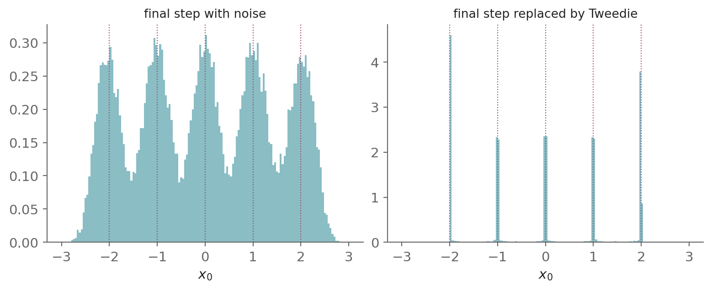
As written, Algorithm 4 injects noise in its final step, so the samples scatter around each level. With the final step replaced by Tweedie’s posterior mean at x_1, the samples lie on the levels.
5.5 Decoupling training from sampling
Training and sampling are decoupled, a separation the SDE framework [1] makes explicit: what to learn is fixed and how to integrate is free. Whatever forward SDE we pick, VP, VE or sub-VP, the only learned object is the time-indexed score \nabla_x \log p_t, trained once by the weighted DSM objective Equation 29. Generation is then any numerical integrator applied to the reverse-time SDE (Equation 17) or the probability-flow ODE (Equation 25), and Algorithms 4 to 6 are three such integrators.
The three forward SDEs are not different models trained differently. They are three choices of the forward coefficients f, g, feeding the same score-learning scheme and the same family of samplers. This decoupling is also why sampler quality has improved independently of the model. Better integrators, of higher order or with fewer steps, replace earlier ones without retraining.
6 Why This Matters
Song et al.’s largest contribution [1] is not a new model but a framework, made of the forward SDE, the reverse-time SDE, the score as a drift correction and the probability-flow ODE. The VP and VE derivations that occupy so much of the paper are the evidence for it, since they show the two lineages to be one equation with two choices of coefficients.
The methods that followed are written in this framework. Karras et al.’s Elucidating the Design Space of Diffusion-Based Generative Models (EDM) framework [7] rewrites the forward SDE in terms of a noise level and a signal scale. Lipman et al.’s flow matching [8] learns, by regression and without solving the ODE, the velocity field of an ODE whose solution has a chosen marginal path, the role the probability-flow ODE plays here. Song et al.’s consistency models [9] learn the map from each point of a probability-flow ODE trajectory to the point that trajectory reaches at t_{\min}, so a sample needs one network evaluation.
Forward and reverse processes form the backbone of the series. Everything that follows is a variation on one strategy: learn something about the easy forward process, then run it backward to generate. The forward direction is always simple to run. All the modeling effort goes into the one quantity the reverse pass needs but the forward pass discards. Here that quantity is the score; in flow matching (post #4) it is a velocity field; in conditional generation (post #6) it is a conditional score. Same structure, different realization.
The noise schedule is a design choice. Within one SDE family, the schedule \beta(t) or \sigma(t) fixes m(t) and \Sigma(t) (Table 1), and so decides how the noise levels are spread over [0, T]. That spread decides where training and sampling spend their effort. DDPM used a linear schedule, \beta_i rising from 10^{-4} to 0.02 over 1000 steps [5]. Nichol and Dhariwal found that it drives \bar\alpha close to zero well before the last step, so the final stretch of the forward process is nearly pure noise and contributes little. Their cosine schedule changes \bar\alpha slowly near both ends instead [15],
\bar\alpha(t) = \frac{\cos^2\!\big(\tfrac{t/T + s}{1 + s} \cdot \tfrac{\pi}{2}\big)}{\cos^2\!\big(\tfrac{s}{1 + s} \cdot \tfrac{\pi}{2}\big)}
with a small offset s.
Comparing the two schedules:
Here we plot \bar\alpha against t = i/N for the linear schedule and for the cosine schedule with s = 0.008, as Figure 10 shows below.
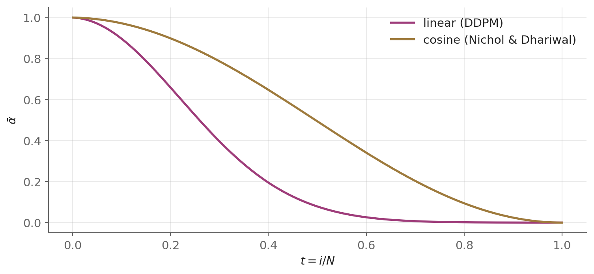
By t = 0.6 the linear schedule has driven \bar\alpha below 0.03, while the cosine schedule keeps it near 0.34. Karras et al. later separated the two roles the schedule plays, the noise levels seen in training and the time grid used in sampling, and tuned each on its own [7]. Post #7 analyzes that design space.
VP became the default; VE and sub-VP keep their roles. The VP variance stays bounded for each t (Section 1.5), so the network sees inputs of comparable scale at each noise level. The DDPM lineage, including guided diffusion [16], which guides sampling with the gradient of a classifier, and latent diffusion [17], which runs the diffusion in the latent space of an autoencoder, is built on this form.
VE has no such bound. Its \sigma_{\max} is chosen near the largest distance between training points, far above the data’s scale [1], so the scale of its inputs grows by orders of magnitude across t (Figure 4). In return, VE gave Song et al. their best sample quality, while VP and sub-VP gave higher likelihoods [1]. EDM keeps the VE form and handles the growth with an input scaling, part of its preconditioning, the scalings of the network’s input and output chosen at each noise level so that its input and training target have unit variance [7].
Sub-VP is the likelihood-oriented member. It is bounded like VP, with less noise at intermediate times, and gave the highest likelihoods in Song et al.’s experiments [1]. On CIFAR-10 it reached 2.99 bits per dimension, the negative base-2 log-likelihood of a test image divided by its number of pixel values, so lower is better. The integer pixel values were first dequantized, by adding uniform noise, so that the data has a density.
Different coefficients, the same machinery. Post #1 opened with Itô’s lemma, used it to price an option, and then used it again to derive the DDPM perturbation kernel. This post used the same lemma for each kernel (Section 1.1), the equivalence between marginal paths and the Fokker-Planck equation behind the reverse-time SDE and the probability-flow ODE (Section 2.2 and Section 3), and the change of measure behind risk-neutral pricing for the reverse drift (Section 2.3). VP, VE and sub-VP differ only in f and g. Changing the coefficients changes the model, while the score, the training objective and the samplers stay the same.
Where this goes next: The rest of the series builds on this framework.
- Post #4 develops the probability-flow ODE further. As a continuous normalizing flow, it gives exact likelihoods through the instantaneous change of variables, and flow matching trains such a flow directly.
- Post #5 returns to the corrector of the predictor-corrector sampler, Langevin dynamics, and shows how an error in the learned score bounds the error of the generated distribution.
- Post #6 writes the score of a conditional distribution through Bayes’ rule and uses it to guide generation toward a class or a prompt, by classifier guidance and classifier-free guidance.
- Post #7 places VP and VE as two paths through one design space, writes the probability-flow ODE in the noise level, and derives EDM’s sampling schedule and network preconditioning.
Appendix
A.1 Existence and uniqueness of strong solutions
Post #1 wrote down SDEs (Section 2.1 of post #1) and solved specific ones in closed form. This appendix states the conditions under which a solution exists and is unique, which guarantees that the objects manipulated in the body are well defined. Consider
dX_t = f(X_t, t)\, dt + g(X_t, t)\, dW_t, \qquad X_0 = \xi
on [0, T]. The state is X_t \in \mathbb{R}^d, W_t is an m-dimensional Brownian motion, f : \mathbb{R}^d \times [0, T] \to \mathbb{R}^d and g : \mathbb{R}^d \times [0, T] \to \mathbb{R}^{d \times m} are measurable, and the initial value \xi is independent of W with \mathbb{E}\,|\xi|^2 < \infty. Here f is the drift and g the diffusion coefficient, the letters of this post’s forward SDE. Post #1 writes them \mu and \sigma. Throughout, |\cdot| is the Euclidean norm of a vector and the Frobenius norm of a matrix, the square root of the sum of its squared entries.
Conditions: Suppose the coefficients satisfy, for some constant K and all x, y \in \mathbb{R}^d and t \in [0, T]:
Global Lipschitz:
|f(x,t) - f(y,t)| + |g(x,t) - g(y,t)| \le K\, |x - y| \tag{34}
Linear growth:
|f(x,t)| + |g(x,t)| \le K\,(1 + |x|) \tag{35}
Theorem (existence and uniqueness): Under the conditions Equation 34 and Equation 35 there is an adapted, continuous strong solution X_t on [0, T], unique in that any two such solutions X and Y satisfy \mathbb{P}\big(X_t = Y_t\ \forall t \in [0, T]\big) = 1, with
\mathbb{E}\big[\sup_{t \le T} |X_t|^2\big] < \infty
Proof sketch (Picard iteration):
Set X^{(0)}_t \equiv \xi and iterate
X^{(n+1)}_t = \xi + \int_0^t f\big(X^{(n)}_s, s\big)\, ds + \int_0^t g\big(X^{(n)}_s, s\big)\, dW_s
The stochastic term is bounded by Doob’s maximal inequality, \mathbb{E}\big[\sup_{s \le t} |M_s|^2\big] \le 4\, \mathbb{E}\,|M_t|^2 for a square-integrable martingale M, followed by the Itô isometry, Eq. (38) of post #1, summed over components,
\mathbb{E}\,\Big|\int_0^t H_s\, dW_s\Big|^2 = \mathbb{E}\int_0^t |H_s|^2\, ds
and the drift term by the Cauchy-Schwarz inequality. With the Lipschitz condition Equation 34, the two bounds give
\mathbb{E}\!\sup_{s \le t} \big|X^{(n+1)}_s - X^{(n)}_s\big|^2 \;\le\; C \int_0^t \mathbb{E}\!\sup_{r \le s} \big|X^{(n)}_r - X^{(n-1)}_r\big|^2\, ds
with C depending only on K and T. By induction, successive differences are bounded by a constant times (Ct)^n / n!, so the iterates are Cauchy in L^2 and converge to a solution. Linear growth, Equation 35, keeps every iterate in L^2, so no solution blows up in finite time. A Grönwall argument applied to the difference of two solutions forces uniqueness. Full details are in [13], [18]. \square
The series’ SDEs all qualify. Every forward process in this series is affine in the state, with coefficients that are bounded and measurable in t on [0, T]:
- Geometric Brownian motion (GBM) (f = \mu x, g = \sigma x) and Ornstein-Uhlenbeck (OU) (f = \kappa(\bar\mu - x), g = \sigma), the processes of post #1.
- VP-SDE (f = -\tfrac{1}{2}\beta(t)\, x, g = \sqrt{\beta(t)}), VE-SDE (f = 0, g = \sqrt{d\sigma^2/dt}) and sub-VP SDE (f = -\tfrac{1}{2}\beta(t)\, x, g = \sqrt{\beta(t)\big(1 - \bar\alpha(t)^2\big)}), the processes of this post.
An affine map with bounded coefficients is Lipschitz with linear growth, so each has a unique strong solution. Affinity is far more than the theorem requires, and it is also what makes their kernels closed-form: Gaussian when the diffusion coefficient is state-independent (Section 1.1 for this post’s SDEs, Section 2.4.2 of post #1 for OU), lognormal for GBM (Section 2.4.1 of post #1).
The conditions start to matter only outside the affine family. The reverse-time SDE Equation 17 with a learned score is the case in point. Its drift is affine in x only if the score is, so its well-posedness rests on the Lipschitz continuity of the network. The true score it approximates is Lipschitz only away from t = 0 (the conditions stated at the start of Part 2), which is one reason samplers stop short of t = 0.
A.2 Gaussian perturbation kernels require an affine drift
The previous appendix noted that an affine drift makes the kernels of the series’ SDEs Gaussian, and Section 1.1 derives the Gaussian kernel of the linear SDE Equation 2. This appendix proves the converse in one dimension: if the perturbation kernel is Gaussian for each initial condition, the drift is affine in the state. So the requirement of Gaussian kernels forces the affine form, and the series’ linear SDEs are its case c = 0. The form is not a convenience.
Consider the forward SDE Equation 1 in one dimension,
dx_t = f(x_t, t)\, dt + g(t)\, dW_t, \qquad x_t \in \mathbb{R}
with g(t) > 0 and f continuously differentiable in x.
Theorem (Gaussian kernels force an affine drift): Suppose that for each initial condition x_0 and each t \in (0, T] the perturbation kernel is Gaussian,
p_{0t}(x \mid x_0) = \mathcal{N}\big(x;\; \nu(t),\; \Sigma(t)\big)
with mean \nu: (0, T] \to \mathbb{R} and variance \Sigma: (0, T] \to (0, \infty) that depend on x_0 and are differentiable in t, and that at each t the kernel depends on the initial condition. Then the drift is affine in x, with coefficients f_{\mathrm{lin}}, c: (0, T] \to \mathbb{R},
\boxed{f(x, t) = f_{\mathrm{lin}}(t)\, x + c(t)} \tag{36}
The last hypothesis excludes only a process that forgets its starting point for each t > 0, whose kernel would carry no information about the data.
Proof:
Fix t \in (0, T] and a starting point x_0. Write p for p_{0t}(x \mid x_0) and u = x - \nu(t), so that
\log p = -\frac{u^2}{2\Sigma} - \frac{1}{2}\log(2\pi\Sigma)
and let primes denote \frac{d}{dt}.
For t > 0, p is the density of x_t for the process started at the point x_0, so it satisfies the Fokker-Planck equation, Eq. (35) of post #1, here in one dimension with drift f and diffusion coefficient g(t),
\frac{\partial p}{\partial t} = -\frac{\partial}{\partial x}\big[f\, p\big] + \tfrac12\, g^2\, \frac{\partial^2 p}{\partial x^2}
Expanding the drift term by the product rule,
\frac{\partial p}{\partial t} = -\frac{\partial f}{\partial x}\, p - f\, \frac{\partial p}{\partial x} + \tfrac12\, g^2\, \frac{\partial^2 p}{\partial x^2}
Dividing by p > 0,
\frac{1}{p}\frac{\partial p}{\partial t} = -\frac{\partial f}{\partial x} - f\, \frac{1}{p}\frac{\partial p}{\partial x} + \tfrac12\, g^2\, \frac{1}{p}\frac{\partial^2 p}{\partial x^2}
Substituting the identity
\frac{1}{p}\frac{\partial p}{\partial x} = \frac{\partial \log p}{\partial x} = -\frac{u}{\Sigma}
into the previous line,
\frac{1}{p}\frac{\partial p}{\partial t} = -\frac{\partial f}{\partial x} + f\, \frac{u}{\Sigma} + \tfrac12\, g^2\, \frac{1}{p}\frac{\partial^2 p}{\partial x^2}
Substituting the identity
\frac{1}{p}\frac{\partial^2 p}{\partial x^2} = \frac{\partial^2 \log p}{\partial x^2} + \Big(\frac{\partial \log p}{\partial x}\Big)^2 = -\frac{1}{\Sigma} + \frac{u^2}{\Sigma^2}
into the previous line,
\frac{1}{p}\frac{\partial p}{\partial t} = -\frac{\partial f}{\partial x} + f\, \frac{u}{\Sigma} + \tfrac12\, g^2 \Big(\frac{u^2}{\Sigma^2} - \frac{1}{\Sigma}\Big)
Substituting the identity
\frac{1}{p}\frac{\partial p}{\partial t} = \frac{\partial \log p}{\partial t} = \frac{\nu'\, u}{\Sigma} + \frac{\Sigma'\, u^2}{2\Sigma^2} - \frac{\Sigma'}{2\Sigma}
which uses \frac{\partial u}{\partial t} = -\nu', into the previous line,
\frac{\nu'\, u}{\Sigma} + \frac{\Sigma'\, u^2}{2\Sigma^2} - \frac{\Sigma'}{2\Sigma} = -\frac{\partial f}{\partial x} + f\, \frac{u}{\Sigma} + \tfrac12\, g^2 \Big(\frac{u^2}{\Sigma^2} - \frac{1}{\Sigma}\Big)
Moving the terms in f to the left and every other term to the right,
-\frac{\partial f}{\partial x} + f\, \frac{u}{\Sigma} = \frac{\nu'\, u}{\Sigma} + \frac{\Sigma'\, u^2}{2\Sigma^2} - \frac{\Sigma'}{2\Sigma} - \tfrac12\, g^2 \Big(\frac{u^2}{\Sigma^2} - \frac{1}{\Sigma}\Big)
Grouping by powers of u,
-\frac{\partial f}{\partial x} + f\, \frac{u}{\Sigma} = \frac{\nu'}{\Sigma}\, u + \frac{\Sigma' - g^2}{2\Sigma^2}\, u^2 - \frac{\Sigma' - g^2}{2\Sigma}
The right side is a polynomial in x of degree at most two, with coefficients that depend on t and x_0. Writing it as a function Q: \mathbb{R} \to \mathbb{R} of x and restoring u = x - \nu,
-\frac{\partial f}{\partial x}(x, t) + f(x, t)\, \frac{x - \nu}{\Sigma} = Q(x) \tag{37}
Now take two starting points whose kernels at time t differ, with means \nu_1, \nu_2, variances \Sigma_1, \Sigma_2 and right sides Q_1, Q_2. Writing the identity Equation 37 for each,
\begin{aligned} -\frac{\partial f}{\partial x} + f\, \frac{x - \nu_1}{\Sigma_1} &= Q_1(x) \\[4pt] -\frac{\partial f}{\partial x} + f\, \frac{x - \nu_2}{\Sigma_2} &= Q_2(x) \end{aligned}
Subtracting the second from the first, the term \frac{\partial f}{\partial x} cancels because the drift is the same function for both initial conditions,
f(x, t)\, \Big(\frac{x - \nu_1}{\Sigma_1} - \frac{x - \nu_2}{\Sigma_2}\Big) = Q_1(x) - Q_2(x) \tag{38}
Write \ell: \mathbb{R} \to \mathbb{R} for the bracket as a function of x. It is affine in x,
\ell(x) = \Big(\frac{1}{\Sigma_1} - \frac{1}{\Sigma_2}\Big)\, x - \Big(\frac{\nu_1}{\Sigma_1} - \frac{\nu_2}{\Sigma_2}\Big)
and it vanishes identically only if \Sigma_1 = \Sigma_2 and \nu_1 = \nu_2, which the choice of initial conditions excludes. Two cases remain.
Unequal variances:
If \Sigma_1 \neq \Sigma_2, \ell has a single root x^*. Evaluating the difference Equation 38 at x^* gives Q_1(x^*) - Q_2(x^*) = f(x^*, t)\, \ell(x^*) = 0, so \ell divides the polynomial Q_1 - Q_2, with a quotient L of degree at most one. Dividing by \ell for x \neq x^*,
f(x, t) = L(x)
and continuity of f in x extends this to x^*. So f is affine in x.
Equal variances:
If \Sigma_1 = \Sigma_2 = \Sigma, then \nu_1 \neq \nu_2 and \ell(x) = (\nu_2 - \nu_1)/\Sigma is a nonzero constant. Dividing Equation 38 by it,
f(x, t) = \frac{\Sigma\, \big(Q_1(x) - Q_2(x)\big)}{\nu_2 - \nu_1}
which is a polynomial of degree at most two, f = c_0 + c_1 x + c_2 x^2. In the identity Equation 37 for the first initial condition, -\frac{\partial f}{\partial x} has degree at most one and f\, (x - \nu_1)/\Sigma contributes the single cubic term c_2 x^3/\Sigma, while Q_1 has degree at most two. Matching the coefficients of x^3 gives c_2 = 0, so f is affine in x.
In both cases, for each t,
\boxed{f(x, t) = f_{\mathrm{lin}}(t)\, x + c(t)}
which is Equation 36, the statement of the theorem. \square
The converse and the series’ choice: An affine drift gives a Gaussian kernel. The integrating-factor solution of Section 1.1 carries over with c(t) present: the transform leaves the deterministic drift e^{-F(t)}\, c(t), which adds e^{F(t)} \int_0^t e^{-F(s)}\, c(s)\, ds to the mean and leaves the variance unchanged. In one dimension, then, a Gaussian kernel for each initial condition and an affine drift are equivalent. The series’ forward processes have c = 0, which gives the linear SDE Equation 2.
Simulating a non-affine drift:
Here we simulate the SDE dx_t = -x_t^3\, dt + dW_t, whose drift is not affine, and compare two of its kernels with Gaussians of the same mean and variance, as Figure 11 shows below.
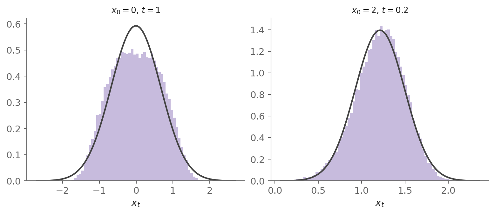
From x_0 = 0, the kernel at t = 1 is flatter than a Gaussian at the top, and from x_0 = 2, the kernel at t = 0.2 is skewed. Neither is Gaussian, consistent with the theorem.
Scope: The proof is one-dimensional. It also covers a drift in \mathbb{R}^d that acts on each coordinate separately, f_j(x, t) = f_j(x_j, t), with the isotropic diffusion g(t)\, I of this post. Each coordinate then solves a scalar SDE of the form above, driven by its own Brownian component. Its kernel is a marginal of the Gaussian kernel, hence Gaussian, so the theorem applies to each coordinate in turn. For a drift that couples the coordinates, subtracting the two identities leaves f \cdot \ell(x) with a vector \ell(x). That is one scalar equation for a vector f, so it does not isolate f, and this proof does not apply.
A.3 Girsanov’s theorem: changing the drift by changing the measure
Itô’s lemma transforms a function of a process. Girsanov’s theorem [3] does something orthogonal: it transforms the measure under which the process is viewed. The effect is to change the drift while leaving the diffusion untouched. In finance this is the change from the real-world measure \mathbb{P} to the risk-neutral measure \mathbb{Q}, which Appendix A.2 of post #1 invoked when pricing. In this post it accounts for the drift correction that separates the reverse-time SDE from the forward SDE run backward without correction (Section 2.3).
It is developed here in full, with four classical inputs cited rather than proved, namely Novikov’s criterion, the local-martingale property of driftless Itô processes, the optional sampling theorem and Lévy’s characterization of Brownian motion. Same machinery, two settings.
The idea: Reweighting each path by a positive factor Z_t makes paths that happen to drift in a chosen direction more (or less) likely, which is indistinguishable from having added a drift to the dynamics. Reweighting cannot change how irregular the paths are. Quadratic variation is a pathwise property (Appendix A.4 of post #1), so (dW)^2 = dt is unchanged by a change of measure. Hence the rule: a change of measure can add or remove drift, never volatility.
Set-up:
Work on [0, T] with a d-dimensional \mathbb{P}-Brownian motion W_t and its filtration \mathcal{F}_t, the information generated by the Brownian path up to time t. Appendix A.5 of post #1 defines filtrations, adapted processes and martingales. Fix an adapted process \psi_t \in \mathbb{R}^d, the drift to be installed, satisfying Novikov’s condition
\mathbb{E}_{\mathbb{P}}\big[\exp(\tfrac{1}{2}\int_0^T \lVert\psi_s\rVert^2\, ds)\big] < \infty
which Step 1 cites to make the density defined next a true martingale. Define the stochastic exponential
\boxed{\,Z_t \;=\; \exp\!\Big(\int_0^t \psi_s^\top dW_s \;-\; \tfrac{1}{2}\int_0^t \lVert\psi_s\rVert^2\, ds\Big)\,} \tag{39}
and a new measure \mathbb{Q} on \mathcal{F}_T by d\mathbb{Q}/d\mathbb{P} = Z_T, the Radon-Nikodym derivative of \mathbb{Q} with respect to \mathbb{P}. It is the factor by which \mathbb{Q} reweights each path, so that \mathbb{Q}(A) = \mathbb{E}_{\mathbb{P}}[Z_T \mathbf{1}_A] for each event A \in \mathcal{F}_T and, more generally, \mathbb{E}_{\mathbb{Q}}[Y] = \mathbb{E}_{\mathbb{P}}[Z_T\, Y] for each integrable random variable Y determined by the path up to T.
Theorem (Girsanov): Under \mathbb{Q}, the process
\tilde W_t \;=\; W_t \;-\; \int_0^t \psi_s\, ds
is a d-dimensional standard Brownian motion. Equivalently dW_t = d\tilde W_t + \psi_t\, dt: the same noise, viewed under \mathbb{Q}, carries an extra drift \psi_t\, dt. For d = 1 this is the scalar form the finance interpretation below uses.
Reweighting Brownian paths:
Here we reweight the endpoints of Brownian paths by Z_T for d = 1 and a constant \psi, as Figure 12 shows below.
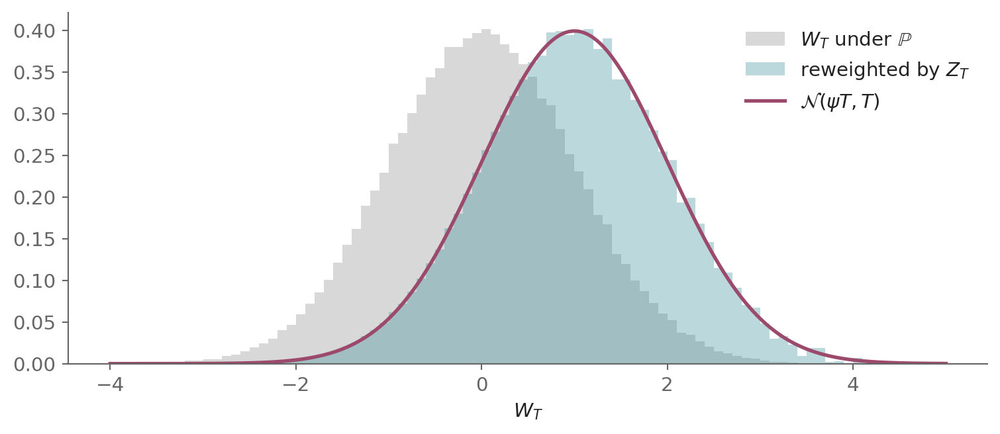
Reweighting shifts the mean of W_T by \psi T and leaves its spread unchanged, which is the drift shift of the theorem.
The proof uses two results of post #1. The first is the cross rule for the independent components of W_t, Eq. (39) of post #1,
dW^i_t\, dW^j_t = \delta_{ij}\, dt
The second is Itô’s lemma, Eq. (40) of post #1, for a scalar process driven by W_t, dX_t = a_t\, dt + b_t^\top dW_t with a_t \in \mathbb{R} and b_t \in \mathbb{R}^d,
dh = \Big(\frac{\partial h}{\partial t} + a_t\, \frac{\partial h}{\partial x} + \tfrac{1}{2} \lVert b_t\rVert^2\, \frac{\partial^2 h}{\partial x^2}\Big)\, dt + \frac{\partial h}{\partial x}\, b_t^\top dW_t
Step 1 — Z_t is a positive \mathbb{P}-martingale with Z_0 = 1:
Write Z_t = e^{X_t} with X_t = \int_0^t \psi_s^\top dW_s - \tfrac{1}{2}\int_0^t \lVert\psi_s\rVert^2\, ds, so that
dX_t = -\tfrac{1}{2}\lVert\psi_t\rVert^2\, dt + \psi_t^\top dW_t
and apply the lemma to Z_t = h(X_t) with h(x) = e^{x}.
Coefficients (from dX_t):
a_t = -\tfrac{1}{2}\lVert\psi_t\rVert^2 and b_t = \psi_t, so \lVert b_t \rVert^2 = \lVert\psi_t\rVert^2.
Partials (from h = e^{x}):
\frac{\partial h}{\partial t} = 0, \qquad \frac{\partial h}{\partial x} = e^{x}, \qquad \frac{\partial^2 h}{\partial x^2} = e^{x}
Substituting the coefficients and the three partials into the lemma,
dZ_t = \Big(0 - \tfrac{1}{2}\lVert\psi_t\rVert^2\, e^{X_t} + \tfrac{1}{2}\lVert\psi_t\rVert^2\, e^{X_t}\Big)\, dt + e^{X_t}\, \psi_t^\top dW_t
Cancelling the two dt terms,
dZ_t = e^{X_t}\, \psi_t^\top dW_t
Substituting e^{X_t} = Z_t,
dZ_t = Z_t\, \psi_t^\top dW_t
So Z_t has no drift and is a positive local \mathbb{P}-martingale. A local martingale is a process that becomes a martingale when stopped at each time of some sequence of random times increasing to T, each decided by the path up to that time, and such a sequence is a localizing sequence. A driftless Itô process is a local martingale [18] but need not be a true one. Novikov’s condition makes Z_t a true martingale [18], with \mathbb{E}_{\mathbb{P}}[Z_t] = Z_0 = 1. Hence \mathbb{Q} is a probability measure equivalent to \mathbb{P}: since Z_T > 0, the two assign positive probability to the same events.
Step 2 — \tilde W_t is a d-dimensional \mathbb{Q}-Brownian motion:
By Lévy’s characterization in d dimensions [18], it is enough that each component \tilde W^i_t is a continuous \mathbb{Q}-local martingale and that [\tilde W^i, \tilde W^j]_t = \delta_{ij}\, t.
Continuity is inherited from W. Quadratic variation is pathwise, so the change of measure leaves it unchanged, and subtracting \int_0^t \psi^i_s\, ds does not change the products of increments, since dt\, dW^j_t = 0 and (dt)^2 = 0. By the cross rule,
[\tilde W^i, \tilde W^j]_t = [W^i, W^j]_t = \delta_{ij}\, t
For the local-martingale property, use the change-of-measure rule: M_t is a \mathbb{Q}-martingale iff M_t Z_t is a \mathbb{P}-martingale. Fix s \le t and an event A \in \mathcal{F}_s.
By the definition of \mathbb{Q}, \mathbb{E}_{\mathbb{Q}}[Y] = \mathbb{E}_{\mathbb{P}}[Z_T\, Y] with Y = M_t \mathbf{1}_A,
\mathbb{E}_{\mathbb{Q}}[M_t \mathbf{1}_A] = \mathbb{E}_{\mathbb{P}}[M_t Z_T \mathbf{1}_A]
By the tower property and the martingale property of Z,
\mathbb{E}_{\mathbb{Q}}[M_t \mathbf{1}_A] = \mathbb{E}_{\mathbb{P}}[M_t Z_t \mathbf{1}_A]
So the equalities \mathbb{E}_{\mathbb{Q}}[M_t \mathbf{1}_A] = \mathbb{E}_{\mathbb{Q}}[M_s \mathbf{1}_A] that make M a \mathbb{Q}-martingale are the equalities \mathbb{E}_{\mathbb{P}}[M_t Z_t \mathbf{1}_A] = \mathbb{E}_{\mathbb{P}}[M_s Z_s \mathbf{1}_A] that make M Z a \mathbb{P}-martingale. The rule extends to local martingales. Let MZ be a \mathbb{P}-local martingale with a localizing sequence \tau_n (Step 1), so that each M_{\tau_n \wedge t} Z_{\tau_n \wedge t} is a \mathbb{P}-martingale. Then M_{\tau_n \wedge t} Z_t is a \mathbb{P}-martingale too. For s \le t and A \in \mathcal{F}_s, on \{\tau_n \le s\} the factor M_{\tau_n \wedge t} is known at time s and Z is a martingale. On \{\tau_n > s\}, where A \cap \{\tau_n > s\} lies in \mathcal{F}_{\tau_n \wedge t}, optional sampling [18] gives \mathbb{E}_{\mathbb{P}}[M_{\tau_n \wedge t} Z_t \mid \mathcal{F}_{\tau_n \wedge t}] = M_{\tau_n \wedge t} Z_{\tau_n \wedge t}. By the rule, each stopped M_{\tau_n \wedge t} is a \mathbb{Q}-martingale, so M is a \mathbb{Q}-local martingale.
Set M_t = \tilde W^i_t. By the Itô product rule, derived in Appendix A.3 of post #1,
d(\tilde W^i_t Z_t) = \tilde W^i_t\, dZ_t + Z_t\, d\tilde W^i_t + d\tilde W^i_t\, dZ_t
Substituting dZ_t = Z_t \sum_j \psi^j_t\, dW^j_t and d\tilde W^i_t = dW^i_t - \psi^i_t\, dt,
d(\tilde W^i_t Z_t) = \tilde W^i_t Z_t \sum_j \psi^j_t\, dW^j_t + Z_t\big(dW^i_t - \psi^i_t\, dt\big) + \big(dW^i_t - \psi^i_t\, dt\big)\, Z_t \sum_j \psi^j_t\, dW^j_t
Using dW^i_t\, dW^j_t = \delta_{ij}\, dt and dt\, dW^j_t = 0,
d(\tilde W^i_t Z_t) = \tilde W^i_t Z_t \sum_j \psi^j_t\, dW^j_t + Z_t\, dW^i_t - Z_t \psi^i_t\, dt + Z_t \psi^i_t\, dt
The \pm Z_t \psi^i_t\, dt terms cancel,
d(\tilde W^i_t Z_t) = Z_t \Big(\tilde W^i_t \sum_j \psi^j_t\, dW^j_t + dW^i_t\Big)
The result is driftless, so \tilde W^i Z is a \mathbb{P}-local martingale, and by the rule \tilde W^i is a \mathbb{Q}-local martingale. With [\tilde W^i, \tilde W^j]_t = \delta_{ij}\, t, Lévy’s characterization gives that \tilde W_t is a d-dimensional standard Brownian motion under \mathbb{Q}. \square
The corollary the series uses — reshaping an SDE’s drift:
Suppose under \mathbb{P} a process solves dX_t = f(X_t, t)\, dt + g(X_t, t)\, dW_t (Section 2.1 of post #1), with g a d \times d matrix (the scalar g(t) times I in this post’s forward SDE). Substituting dW_t = d\tilde W_t + \psi_t\, dt,
\boxed{\,dX_t \;=\; \big[\, f(X_t, t) + g(X_t, t)\, \psi_t \,\big]\, dt \;+\; g(X_t, t)\, d\tilde W_t \quad (\text{under } \mathbb{Q})\,} \tag{40}
The drift shifts by g\psi, and the diffusion coefficient g is invariant. To install a desired new drift \tilde f, with g invertible, choose
\psi_t \;=\; g(X_t, t)^{-1}\big(\tilde f(X_t, t) - f(X_t, t)\big)
and the change of measure delivers dX_t = \tilde f\, dt + g\, d\tilde W_t. This “pick \psi to retarget the drift” step is the content of risk-neutral pricing, and of the drift correction in the reverse-time SDE (Section 2.3).
The finance interpretation (risk-neutral pricing, d = 1): In Appendix A.2 of post #1 the stock obeys dS = \mu S\, dt + \sigma S\, dW under \mathbb{P}, with r the risk-free interest rate. Pricing requires the discounted stock e^{-rt} S_t, the stock price in units of a money-market account that grows as e^{rt}, to be a martingale, i.e. drift r instead of \mu. By Equation 40 that means \sigma S\,\psi = (r - \mu) S, so
\psi \;=\; \frac{r - \mu}{\sigma} \;=\; -\,(\text{market price of risk})
a constant Girsanov shift. Under the resulting measure \mathbb{Q} the log-return is normal with mean \big(r - \tfrac{1}{2}\sigma^2\big)T, so the stock itself grows at mean rate r (the computation of Section 2.4.1 of post #1 with \mu \to r). And N(d_2) is the risk-neutral exercise probability, N(d_2) = \mathbb{Q}(S_T > K), the interpretation named in Appendix A.2 of post #1.
N(d_1) is also a probability, but under a different measure. A numéraire is the asset in whose units prices are quoted. \mathbb{Q} quotes them in the money-market account, and the stock-numéraire measure \mathbb{Q}^S quotes them in the stock. A second Girsanov change, to \mathbb{Q}^S, gives N(d_1) = \mathbb{Q}^S(S_T > K), which is also the option’s delta, the sensitivity \partial V/\partial S of its value V to the stock price. That change is Equation 40 applied once more with \psi = \sigma, so d\mathbb{Q}^S/d\mathbb{Q} = S_T/(S_0 e^{rT}).
Back-reference: The Bayes’-rule derivation of this post (Section 2.3) relates to the same theorem (Section 2.3.2). In the reversed time \tau, with \psi = g\, \nabla_x \log p_{T-\tau}, Equation 40 accounts for the whole difference between the forward SDE run backward and the reverse-time SDE. In the forward time it is a shift of -g^2\, \nabla_x \log p_t in the drift, with \psi = -g\, \nabla_x \log p_t and the diffusion g(t) untouched. The time reversal itself is not a change of measure; supplying it is the content of the time-reversal theory [12]. For complete proofs of Girsanov’s theorem and Lévy’s characterization see [13], [18].
A.4 The framework for general SDEs
The body of this post restricts the diffusion to a scalar function of time times the identity, g(t)\, I. Song et al. state the framework for the general SDE [1]
dX_t = f(X_t, t)\, dt + G(X_t, t)\, dW_t
with a diffusion matrix G: \mathbb{R}^d \times [0, T] \to \mathbb{R}^{d \times d} that may depend on the state. This appendix derives its Fokker-Planck equation, reverse-time SDE and probability-flow ODE, and the training objective that replaces DSM when the kernel has no closed form. Write D = G G^\top: \mathbb{R}^d \times [0, T] \to \mathbb{R}^{d \times d} for the diffusion tensor, \partial_i for \partial / \partial x_i, and \nabla_x \cdot D for the row-wise divergence, (\nabla_x \cdot D)_i = \sum_j \partial_j D_{ij}.
The Fokker-Planck equation:
The weak-form derivation of Eq. (35) of post #1, in Section 4.10.3 of post #1, carries over, and only the diffusion term changes. Itô’s lemma for a state in \mathbb{R}^d, Eq. (40) of post #1, restated with drift f and diffusion matrix G, gives for a smooth test function \varphi(x) with compact support
d\varphi(X_t) = \Big(f \cdot \nabla_x \varphi + \tfrac{1}{2} \operatorname{tr}\!\big(D\, \nabla_x^2 \varphi\big)\Big)\, dt + \nabla_x \varphi \cdot G\, dW_t
Taking expectations, which removes the Itô integral, and writing them as integrals against p_t, as in Step 2 there,
\int \varphi\, \frac{\partial p_t}{\partial t}\, dx = \int \Big(f \cdot \nabla_x \varphi + \tfrac{1}{2} \sum_{i,j} D_{ij}\, \partial_i \partial_j \varphi\Big)\, p_t\, dx
Integrating the drift term by parts once and each diffusion term twice, as in Step 3 there, so that every derivative falls on f\, p_t and D_{ij}\, p_t,
\int \varphi\, \frac{\partial p_t}{\partial t}\, dx = \int \varphi\, \Big(-\nabla_x \cdot (f\, p_t) + \tfrac{1}{2} \sum_{i,j} \partial_i \partial_j\big(D_{ij}\, p_t\big)\Big)\, dx
Since this holds for each test function, the integrands agree,
\boxed{\frac{\partial p_t}{\partial t} = -\nabla_x \cdot (f\, p_t) + \tfrac{1}{2} \sum_{i,j} \partial_i \partial_j\big(D_{ij}\, p_t\big)} \tag{41}
For D = g(t)^2 I it is the Fokker-Planck equation, the right side of Equation 18.
The diffusion term as a divergence:
Both the reverse-time SDE and the probability-flow ODE rest on writing the diffusion term as a divergence, as the log-derivative identity from Equation 19 does for D = I. Expanding the inner derivative by the product rule,
\sum_j \partial_j\big(D_{ij}\, p_t\big) = p_t\, (\nabla_x \cdot D)_i + \sum_j D_{ij}\, \partial_j p_t
Substituting \partial_j p_t = p_t\, \partial_j \log p_t,
\sum_j \partial_j\big(D_{ij}\, p_t\big) = p_t\, \big[(\nabla_x \cdot D)_i + (D\, \nabla_x \log p_t)_i\big]
Taking \tfrac{1}{2} \sum_i \partial_i of both sides,
\tfrac{1}{2} \sum_{i,j} \partial_i \partial_j\big(D_{ij}\, p_t\big) = \tfrac{1}{2}\, \nabla_x \cdot \Big[p_t\, \big(\nabla_x \cdot D + D\, \nabla_x \log p_t\big)\Big] \tag{42}
The reverse-time SDE:
The construction of Section 2.2 carries over. Starting from Equation 41,
\frac{\partial p_t}{\partial t} = -\nabla_x \cdot (f\, p_t) + \tfrac{1}{2} \sum_{i,j} \partial_i \partial_j\big(D_{ij}\, p_t\big)
Writing the diffusion term as twice itself minus itself,
\frac{\partial p_t}{\partial t} = -\nabla_x \cdot (f\, p_t) + \sum_{i,j} \partial_i \partial_j\big(D_{ij}\, p_t\big) - \tfrac{1}{2} \sum_{i,j} \partial_i \partial_j\big(D_{ij}\, p_t\big)
Substituting twice the divergence form Equation 42 for the middle term,
\frac{\partial p_t}{\partial t} = -\nabla_x \cdot (f\, p_t) + \nabla_x \cdot \Big[p_t\, \big(\nabla_x \cdot D + D\, \nabla_x \log p_t\big)\Big] - \tfrac{1}{2} \sum_{i,j} \partial_i \partial_j\big(D_{ij}\, p_t\big)
Combining the first two terms into one divergence,
\frac{\partial p_t}{\partial t} = -\nabla_x \cdot \Big[\big(f - \nabla_x \cdot D - D\, \nabla_x \log p_t\big)\, p_t\Big] - \tfrac{1}{2} \sum_{i,j} \partial_i \partial_j\big(D_{ij}\, p_t\big)
Reversing time as in Section 2.2, with \bar p_\tau = p_{T-\tau}, \partial_t p_t = -\partial_\tau \bar p_\tau, and the coefficients evaluated at t = T - \tau,
-\frac{\partial \bar p_\tau}{\partial \tau} = -\nabla_x \cdot \Big[\big(f - \nabla_x \cdot D - D\, \nabla_x \log \bar p_\tau\big)\, \bar p_\tau\Big] - \tfrac{1}{2} \sum_{i,j} \partial_i \partial_j\big(D_{ij}\, \bar p_\tau\big)
Multiplying both sides by -1,
\frac{\partial \bar p_\tau}{\partial \tau} = \nabla_x \cdot \Big[\big(f - \nabla_x \cdot D - D\, \nabla_x \log \bar p_\tau\big)\, \bar p_\tau\Big] + \tfrac{1}{2} \sum_{i,j} \partial_i \partial_j\big(D_{ij}\, \bar p_\tau\big)
Writing the sign inside the divergence,
\frac{\partial \bar p_\tau}{\partial \tau} = -\nabla_x \cdot \Big[-\big(f - \nabla_x \cdot D - D\, \nabla_x \log \bar p_\tau\big)\, \bar p_\tau\Big] + \tfrac{1}{2} \sum_{i,j} \partial_i \partial_j\big(D_{ij}\, \bar p_\tau\big)
This is the Fokker-Planck equation Equation 41, in the time \tau, of the SDE with the drift -\big(f - \nabla_x \cdot D - D\, \nabla_x \log p_{T-\tau}\big) and the diffusion matrix G(y_\tau, T - \tau). The sufficiency proof of Section 2.1.2 carries over to a diffusion matrix that depends on the state, with the operator f \cdot \nabla_x u + \tfrac{1}{2} \operatorname{tr}\!\big(D\, \nabla_x^2 u\big) of the backward Kolmogorov equation in place of f \cdot \nabla_x u + \tfrac{1}{2} g^2\, \Delta_x u, for coefficients that are smooth with bounded derivatives [13].
Assume that the coefficients of that SDE are smooth and Lipschitz with bounded derivatives, and that \bar p_\tau, together with D\, \bar p_\tau, decays at infinity and is dominated. The body verifies these for its linear SDEs, and the general case needs them as hypotheses of this argument; Haussmann and Pardoux prove the reversal under weaker conditions [12]. Then \bar p_\tau is the marginal path of the solution of that SDE with the initial condition y_0 \sim \bar p_0, which is p_T. Writing it in the original time as in Section 2.2, with \bar x_t = y_{T-t},
\boxed{d\bar x_t = \Big[f(\bar x_t, t) - \nabla_x \cdot D(\bar x_t, t) - D(\bar x_t, t)\, \nabla_x \log p_t(\bar x_t)\Big]\, dt + G(\bar x_t, t)\, d\bar W_t} \tag{43}
The probability-flow ODE:
Substituting the divergence form Equation 42 of the diffusion term into Equation 41,
\frac{\partial p_t}{\partial t} = -\nabla_x \cdot (f\, p_t) + \tfrac{1}{2}\, \nabla_x \cdot \Big[p_t\, \big(\nabla_x \cdot D + D\, \nabla_x \log p_t\big)\Big]
Combining into one divergence,
\frac{\partial p_t}{\partial t} = -\nabla_x \cdot \Big[\Big(f - \tfrac{1}{2}\, \nabla_x \cdot D - \tfrac{1}{2}\, D\, \nabla_x \log p_t\Big)\, p_t\Big]
This is a continuity equation, and the argument of Section 3.2 applies under the same kind of hypotheses, a continuously differentiable and Lipschitz velocity field and a marginal p_t that decays at infinity and is dominated: by the sufficiency part of Equation 26, p_t is the marginal path of the solution of the ODE with this velocity field,
\boxed{\frac{dx_t}{dt} = f(x_t, t) - \tfrac{1}{2}\, \nabla_x \cdot D(x_t, t) - \tfrac{1}{2}\, D(x_t, t)\, \nabla_x \log p_t(x_t)} \tag{44}
For G = g(t)\, I, \nabla_x \cdot D = 0 and D = g^2 I, so Equation 43 and Equation 44 reduce to Equation 17 and Equation 25.
Training without a closed-form kernel:
When f is not affine, the perturbation kernel is in general not Gaussian, as Appendix A.2 proves, with a state-independent diffusion g(t), in one dimension and for a drift acting on each coordinate separately, and it has no closed form, so the regression target \nabla_{x_t} \log p_{0t}(x_t \mid x_0) of DSM is unavailable. Song et al. then sample x_t by simulating the forward SDE with data samples as initial conditions and train with sliced score matching (SSM), which needs no target score [1], [6]. Its starting point is post #2’s implicit score matching (ISM) objective, Eq. (16) of post #2,
\mathcal{L}_{\mathrm{ISM}_{p_0}}(\theta) = \mathbb{E}_{p_0}\Big[\tfrac{1}{2}\lVert s_\theta(x)\rVert^2 + \operatorname{tr}\big(\nabla_x s_\theta(x)\big)\Big] \tag{45}
whose trace costs d backward passes (Table 1 of post #2). Hutchinson’s estimator [19] replaces the trace by a random projection: for v with \mathbb{E}[v v^\top] = I and each matrix A, \mathbb{E}_v[v^\top A v] = \mathbb{E}_v[\operatorname{tr}(A\, v v^\top)] = \operatorname{tr}(A). Applied for each t with the weight \lambda(t), it gives the weighted SSM objective
\boxed{\mathcal{L}_{\mathrm{SSM}_{p_t}}(\theta; \lambda) = \mathbb{E}_t\Big\{\lambda(t)\, \mathbb{E}_{p_t}\, \mathbb{E}_v\Big[\lVert s_\theta(x_t, t)\rVert^2 + 2\, v^\top \nabla_x s_\theta(x_t, t)\, v\Big]\Big\}} \tag{46}
Each term needs one Jacobian-vector product, the product \nabla_x s_\theta\, v that automatic differentiation computes in one pass without forming the Jacobian, instead of d backward passes. Its expectation over v is \mathbb{E}_t\big\{2\lambda(t)\, \mathcal{L}_{\mathrm{ISM}_{p_t}}(\theta)\big\}, where \mathcal{L}_{\mathrm{ISM}_{p_t}} is Equation 45 with p_t in place of p_0, so its minimizer is the marginal score, as for ISM.
How to cite
If you found this useful, please cite as:
@misc{aja2026unification,
title = {SDE-Based Generative Models: The Unification},
author = {Aja S.},
year = {2026},
url = {https://aja-ekapada.github.io/continuous-time-generative-models/03-the-unification/},
note = {Continuous-Time Generative Models series, post 3}
}References
[1]
Y. Song, J. Sohl-Dickstein, D. P. Kingma, A. Kumar, S. Ermon, and B. Poole, “Score-based generative modeling through stochastic differential equations,” in International conference on learning representations (ICLR), 2021. Available: https://arxiv.org/abs/2011.13456
[2]
B. D. O. Anderson, “Reverse-time diffusion equation models,” Stochastic Processes and their Applications, vol. 12, no. 3, pp. 313–326, 1982, doi: 10.1016/0304-4149(82)90051-5.
[3]
I. V. Girsanov, “On transforming a certain class of stochastic processes by absolutely continuous substitution of measures,” Theory of Probability and Its Applications, vol. 5, no. 3, pp. 285–301, 1960.
[4]
P. Vincent, “A connection between score matching and denoising autoencoders,” Neural Computation, vol. 23, no. 7, pp. 1661–1674, 2011, doi: 10.1162/NECO_a_00142.
[5]
J. Ho, A. Jain, and P. Abbeel, “Denoising diffusion probabilistic models,” Advances in Neural Information Processing Systems, vol. 33, pp. 6840–6851, 2020, Available: https://arxiv.org/abs/2006.11239
[6]
Y. Song, S. Garg, J. Shi, and S. Ermon, “Sliced score matching: A scalable approach to density and score estimation,” in Uncertainty in artificial intelligence (UAI), 2019. Available: https://arxiv.org/abs/1905.07088
[7]
T. Karras, M. Aittala, T. Aila, and S. Laine, “Elucidating the design space of diffusion-based generative models,” in Advances in neural information processing systems (NeurIPS), 2022. Available: https://arxiv.org/abs/2206.00364
[8]
Y. Lipman, R. T. Q. Chen, H. Ben-Hamu, M. Nickel, and M. Le, “Flow matching for generative modeling,” in International conference on learning representations (ICLR), 2023. Available: https://arxiv.org/abs/2210.02747
[9]
Y. Song, P. Dhariwal, M. Chen, and I. Sutskever, “Consistency models,” in International conference on machine learning (ICML), 2023. Available: https://arxiv.org/abs/2303.01469
[10]
G. Maruyama, “Continuous markov processes and stochastic equations,” Rendiconti del Circolo Matematico di Palermo, vol. 4, pp. 48–90, 1955.
[11]
Y. Song and S. Ermon, “Generative modeling by estimating gradients of the data distribution,” in Advances in neural information processing systems (NeurIPS), 2019. Available: https://arxiv.org/abs/1907.05600
[12]
U. G. Haussmann and É. Pardoux, “Time reversal of diffusions,” The Annals of Probability, vol. 14, no. 4, pp. 1188–1205, 1986, doi: 10.1214/aop/1176992362.
[13]
B. Øksendal, Stochastic differential equations: An introduction with applications, 6th ed. Springer, 2003.
[14]
T. H. Gronwall, “Note on the derivatives with respect to a parameter of the solutions of a system of differential equations,” Annals of Mathematics, vol. 20, no. 4, pp. 292–296, 1919.
[15]
A. Q. Nichol and P. Dhariwal, “Improved denoising diffusion probabilistic models,” in Proceedings of the 38th international conference on machine learning (ICML), in Proceedings of machine learning research, vol. 139. 2021, pp. 8162–8171. Available: https://arxiv.org/abs/2102.09672
[16]
P. Dhariwal and A. Nichol, “Diffusion models beat GANs on image synthesis,” in Advances in neural information processing systems (NeurIPS), 2021. Available: https://arxiv.org/abs/2105.05233
[17]
R. Rombach, A. Blattmann, D. Lorenz, P. Esser, and B. Ommer, “High-resolution image synthesis with latent diffusion models,” in Proceedings of the IEEE/CVF conference on computer vision and pattern recognition (CVPR), 2022, pp. 10684–10695. Available: https://arxiv.org/abs/2112.10752
[18]
I. Karatzas and S. E. Shreve, Brownian motion and stochastic calculus, 2nd ed. Springer, 1991.
[19]
M. F. Hutchinson, “A stochastic estimator of the trace of the influence matrix for laplacian smoothing splines,” Communications in Statistics - Simulation and Computation, vol. 19, no. 2, pp. 433–450, 1990, doi: 10.1080/03610919008812866.